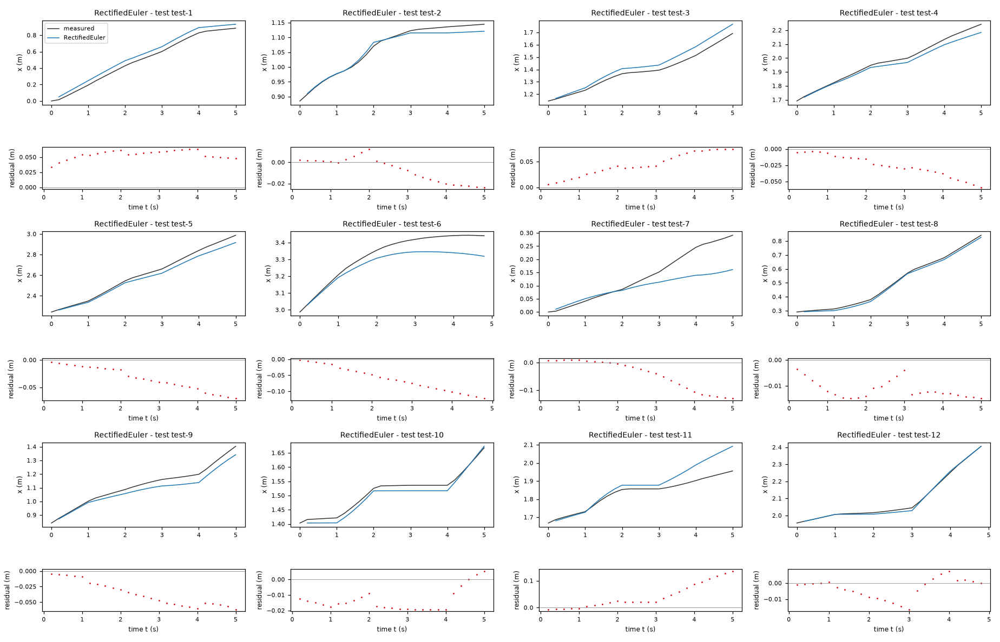
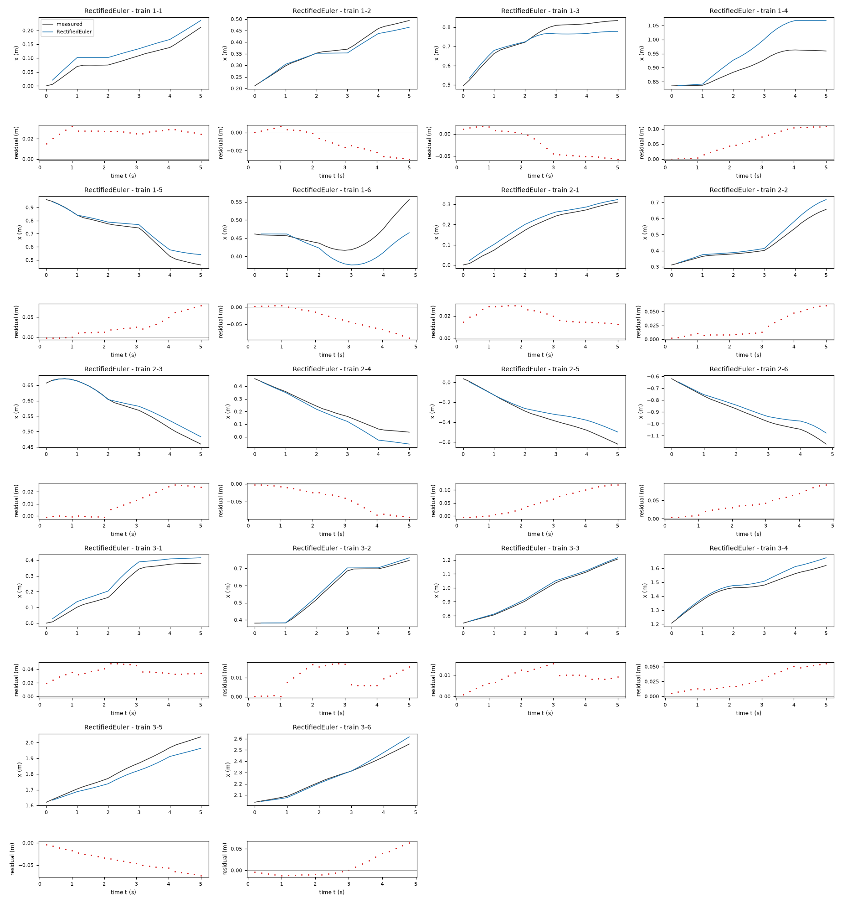
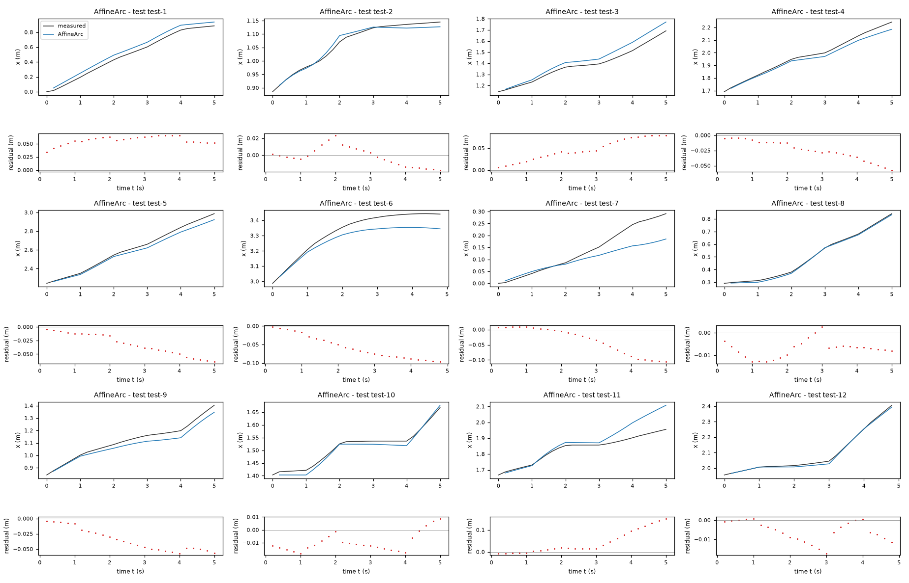
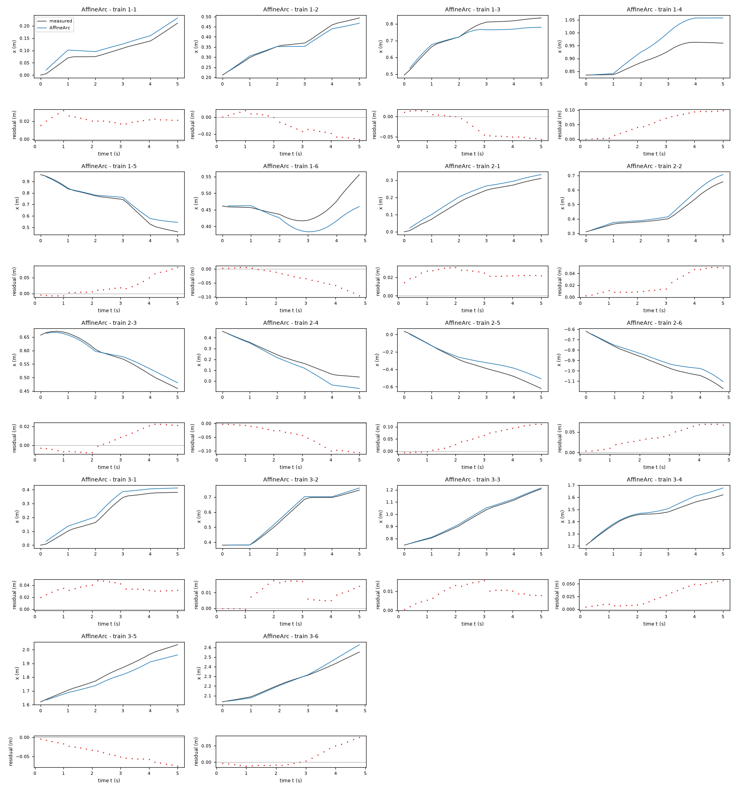
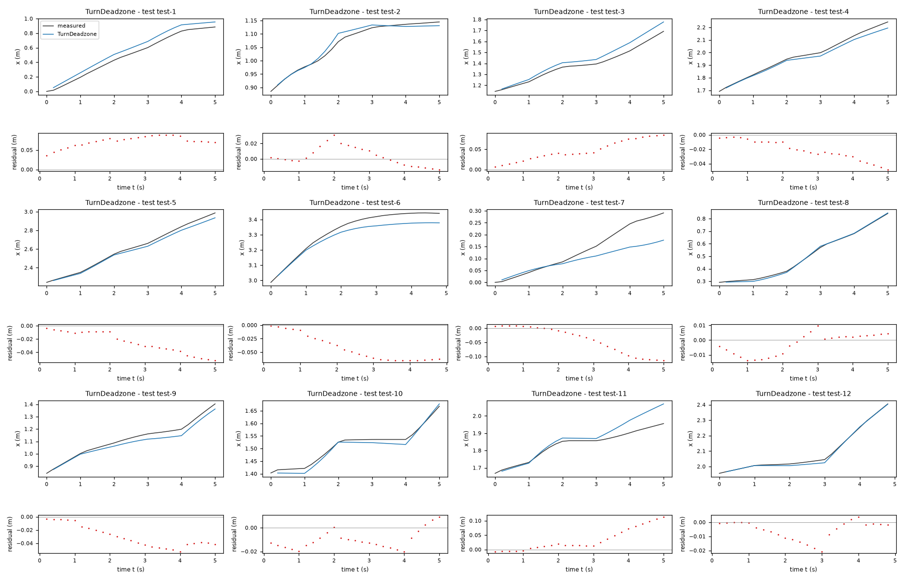
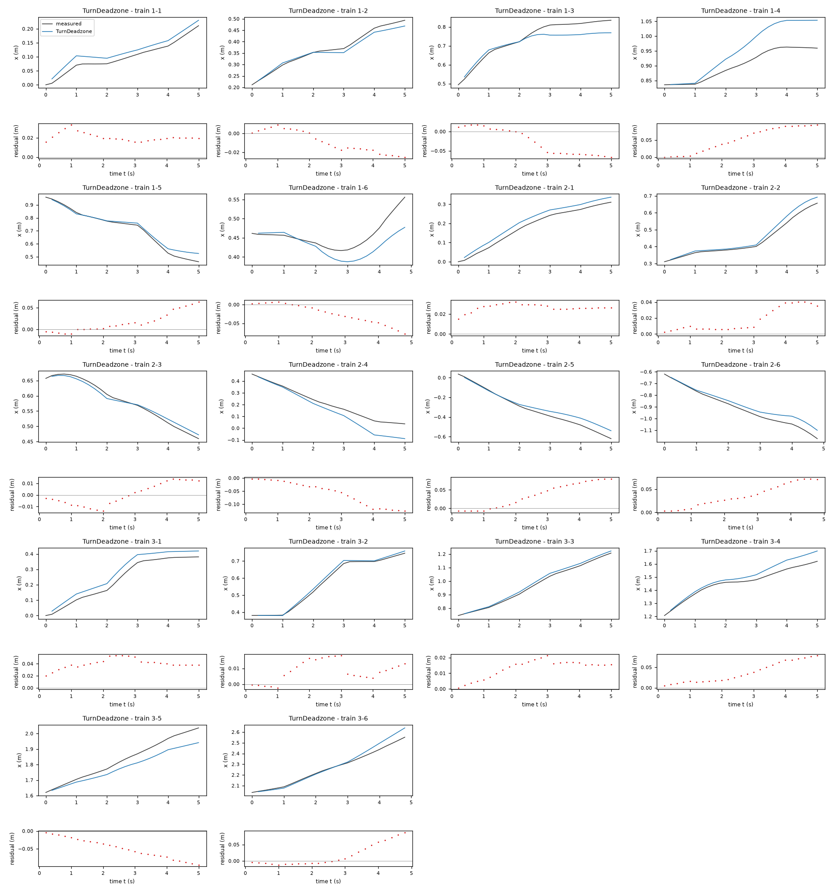
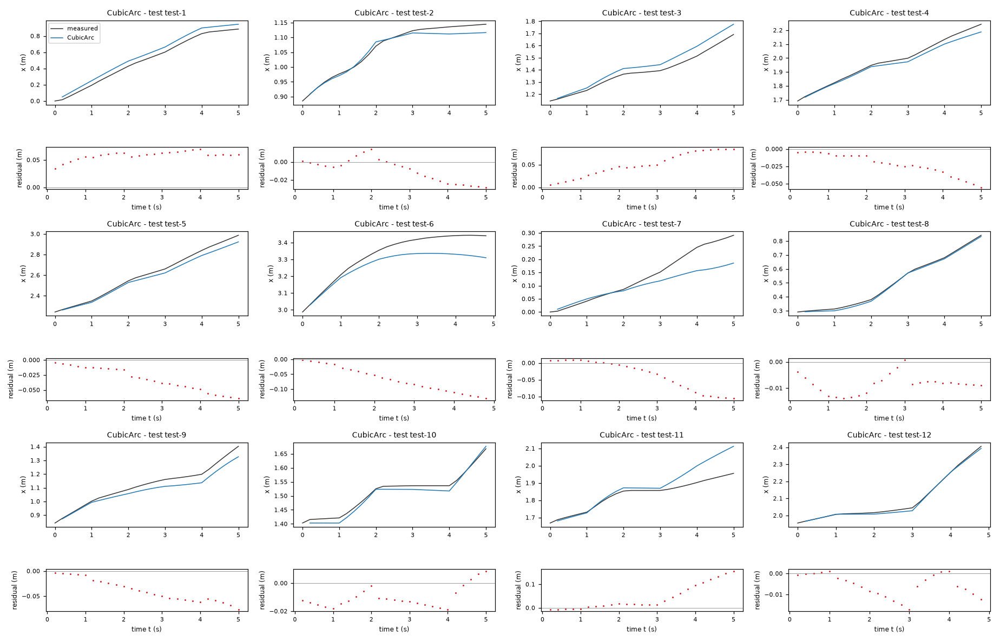
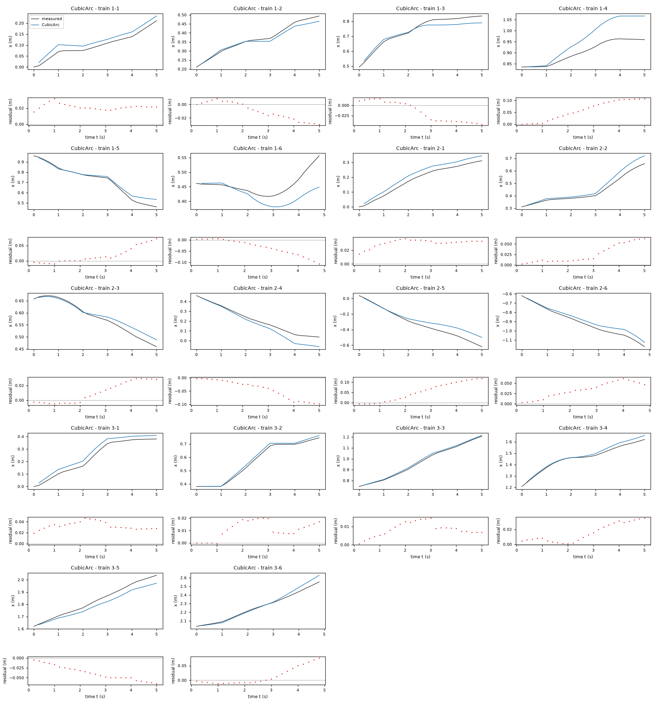
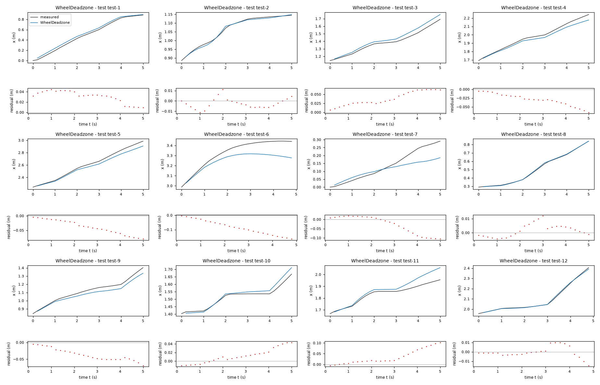
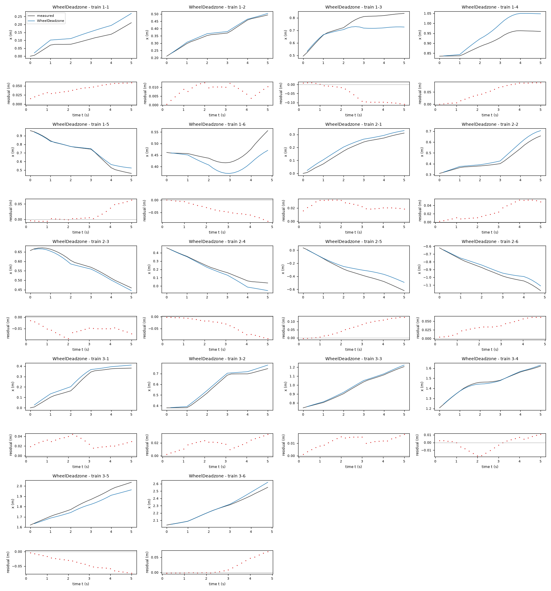

Motion model of a TurtleBot 2 mobile robot – run 4 of 5
Generated: 2026-10-07 23:51 UTC
Finished by the agent after 23 turns, 465 s of execution time and 0.96 USD. 5 models delivered, 5 evaluated.
1 Models
| Model | Fitted parameters | Training error of x (m) | Test error of x (m) | |
|---|---|---|---|---|
| RectifiedEuler | 4 | 0.03917 | 0.04431 | recommended by the agent |
| AffineArc | 4 | 0.03826 | 0.04268 | |
| TurnDeadzone | 5 | 0.03906 | 0.04076 | lowest test error |
| CubicArc | 5 | 0.03803 | 0.04569 | |
| WheelDeadzone | 5 | 0.04027 | 0.04353 |
The models are listed in the agent's order. Errors: root mean squared error between simulated and measured x, in m. Training data: 18 segments of 25 to 26 samples (447 scored samples); the harness cuts the training trajectories into segments of at most 25 simulated samples, the length of the test trajectories, so that the two errors are comparable. Test data, which the agent cannot access: 12 trajectories of 25 to 26 samples (298 scored samples). The agent recommends a model from the training data. The model with the lowest test error is found with the test data, in hindsight, among the 5 models of this run; the agent could not make this choice.
RectifiedEuler: its pooled leave-one-trajectory-out 25-step (5 s) rolling-window x RMSE was 0.02906545 m, the lowest among explored model families, while retaining four interpretable parameters and preventing artificial negative forward speed at tiny nonnegative commands. The simpler proportional Euler fit was almost tied (0.02908078 m), so the threshold benefit is small, not statistically established. Exact arcs, nonlinear angular response, and wheel thresholds did not improve this held-out scored-output metric. Actual test trajectories and test scores were not available; overlapping-window and three-trajectory validation limits confidence.gf = 0.8736 (fitted), ga = 0.7823 (fitted), df = 0.006346 m/s (fitted), ba = 0.004195 rad/s (fitted), Ts = 0.2 s (fixed)x: 0.03917 m · test error: 0.04431 mEquations as written in the model file
x_next = x+Ts*(gf*Max(v_f-df,0))*cos(phi)
y_next = y+Ts*(gf*Max(v_f-df,0))*sin(phi)
phi_next = phi+Ts*(ga*v_a+ba)
Equations with the values substituted
Every parameter is replaced by its value with 4 significant digits.
Parameters and estimation
| Name | Value | Unit | Type | Description |
|---|---|---|---|---|
gf | 0.87356 | - | fitted | Forward-command gain; estimated jointly by the rollout fit described below. |
ga | 0.782345 | - | fitted | Angular-command gain; estimated jointly by the rollout fit described below. |
df | 0.006346 | m/s | fitted | Nonnegative forward-command threshold in ; estimated jointly, not an independently measured motor dead band. |
ba | 0.00419533 | rad/s | fitted | Constant angular-rate offset; this is an empirical offset, not an independently established actuator bias. |
Ts | 0.2 | s | fixed | Sampling period s specified in TASK.md; fixed, not estimated. |
- Criterion minimized
Sum of squared
xrollout errors, becausexis the scored output;yandphiare simulated freely but their errors are not included in fitting. Every rollout starts at a logged pose, then uses only commands for25steps (5s); errors at all steps have equal weight. The optimization is an output-error criterion, not a regression on noisy pose derivatives.- Data
data/train.csv, all three trajectories, all rows. Heading was unwrapped independently per trajectory. Each trajectory has
150samples. Starts are rows0through124inclusive in each trajectory (zero-based), giving375overlapping training windows with25within-trajectory transitions each. No window crosses a trajectory boundary. Later rows contribute targets; the final input has no successor and is not used. Every window uses its logged initial state without smoothing or later pose correction. No data were discarded for fitting beyond the need for a complete window.- Method
Bound-constrained nonlinear least squares with scipy.optimize.least_squares, using its trust-region reflective algorithm and finite-difference Jacobian. It is suitable for the small nonlinear rollout parameter vector; ordinary least squares would not minimize the free-run criterion. All fitted parameters were estimated together in one optimization using all training trajectories. Numerical starts: ; ; m/s; rad/s. Starts encode approximately unity speed gains with small offsets and modest nonlinearities, based on exploratory block motion and physically plausible response. Bounds: ; ; m/s; rad/s. Bounds prevent implausible gains and poorly conditioned searches; they are regularizing assumptions, not independent measurements. Settings: , , , , and
x_scale = "jac". All these solver settings are dimensionless. No random numbers are used and no seed applies. For validation only, I repeated fitting on each pair of trajectories from the same starts and rolled out the omitted trajectory; these validation fits are not the submitted values. Running the named script from the working directory reproduces this candidate in its result JSON; imported local modules are dependencies.- Script
theta_models.py
The agent's explanation
Rectified static-command unicycle with forward-Euler discretization. Standard planar unicycle/nonholonomic kinematics; reference recalled from memory, not checked online: R. M. Murray, Z. Li and S. S. Sastry, A Mathematical Introduction to Robotic Manipulation (1994).
The states x and y are planar positions in m, and phi is heading in rad. Inputs v_f and v_a are forward and angular commands in m/s and rad/s. Ts is the sample period in s. is a nonnegative effective forward speed; gf scales the command and df suppresses small commands. is effective angular rate. and project forward displacement onto the world axes. Euler integration uses the beginning-of-step heading.
The geometry came from differential-drive physical reasoning, preserving translation invariance and omitting absolute-position terms. PLAN.md records the families before fitting. Helper block regressions found little transferable forward nonlinearity, near-zero lateral slip and strong switching transients. I compared affine Euler and exact-arc kinematics, cubic and dead-zone angular maps, smooth tanh turning, wheel dead zones, lateral slip, command coupling, forward saturation and fitted integration angle. The latter alternatives did not consistently improve trajectory-held-out x error and were not retained. The forward threshold was tried after affine fits produced a small negative low-command speed. Rectification prevents artificial reverse motion and gave the lowest pooled held-out x RMSE among the explored candidates. Euler discretization outperformed anticipatory arc integration for this short-horizon approximation, plausibly because it partly offsets missing switching lag; that explanation is not an identified delay mechanism. Training rolling-window x RMSE is 0.02855450 m on all three training trajectories; pooled leave-one-trajectory-out rolling-window x RMSE is 0.02906545 m. These are local diagnostics, not test scores.
Only three training trajectories and nonnegative v_f commands are available; reverse driving is not identified. The observed ranges are m/s and rad/s in data/train.csv. Restrict use to similar commands and approximately 5 s rollouts. No actuator velocity or previous input is available as state; all candidates omit the observed switching lag. Parameters therefore describe effective input-to-odometry motion rather than independently established physical constants. Logged pose noise and slowly correlated residuals remain unresolved. phi_next is intentionally unwrapped; sine and cosine preserve heading periodicity. Accurate long-duration or high-speed motion is not established. The forward threshold is weakly identifiable near the small-command boundary. Euler integration neglects within-step rotation and is not expected to remain accurate for large angular increments. Its fitted angular gain compromises between steady response and omitted transient response.
Plots of simulated and measured x, and errors per trajectory


| Data | Trajectory | Scored samples | RMSE | NRMSE | R² | Failure |
|---|---|---|---|---|---|---|
| training data | 1-1 | 25 of 25 | 0.02666 | 0.5231 | 0.7264 | none |
| training data | 1-2 | 25 of 25 | 0.01592 | 0.2067 | 0.9573 | none |
| training data | 1-3 | 25 of 25 | 0.0355 | 0.3918 | 0.8465 | none |
| training data | 1-4 | 25 of 25 | 0.0701 | 1.408 | -0.9834 | none |
| training data | 1-5 | 25 of 25 | 0.0368 | 0.2466 | 0.9392 | none |
| training data | 1-6 | 24 of 24 | 0.04474 | 1.233 | -0.5208 | none |
| training data | 2-1 | 25 of 25 | 0.02145 | 0.2271 | 0.9484 | none |
| training data | 2-2 | 25 of 25 | 0.03098 | 0.3021 | 0.9087 | none |
| training data | 2-3 | 25 of 25 | 0.01486 | 0.2165 | 0.9531 | none |
| training data | 2-4 | 25 of 25 | 0.05315 | 0.412 | 0.8303 | none |
| training data | 2-5 | 25 of 25 | 0.06963 | 0.3904 | 0.8476 | none |
| training data | 2-6 | 24 of 24 | 0.04956 | 0.3427 | 0.8826 | none |
| training data | 3-1 | 25 of 25 | 0.03686 | 0.284 | 0.9193 | none |
| training data | 3-2 | 25 of 25 | 0.0113 | 0.08234 | 0.9932 | none |
| training data | 3-3 | 25 of 25 | 0.009764 | 0.06772 | 0.9954 | none |
| training data | 3-4 | 25 of 25 | 0.03262 | 0.3262 | 0.8936 | none |
| training data | 3-5 | 25 of 25 | 0.04523 | 0.3646 | 0.8671 | none |
| training data | 3-6 | 24 of 24 | 0.02601 | 0.1674 | 0.972 | none |
| test data | test-1 | 25 of 25 | 0.05478 | 0.1957 | 0.9617 | none |
| test data | test-2 | 25 of 25 | 0.01303 | 0.1702 | 0.971 | none |
| test data | test-3 | 25 of 25 | 0.04932 | 0.3372 | 0.8863 | none |
| test data | test-4 | 25 of 25 | 0.0307 | 0.2043 | 0.9583 | none |
| test data | test-5 | 25 of 25 | 0.04009 | 0.1799 | 0.9677 | none |
| test data | test-6 | 24 of 24 | 0.07179 | 0.5708 | 0.6742 | none |
| test data | test-7 | 25 of 25 | 0.06719 | 0.7248 | 0.4746 | none |
| test data | test-8 | 25 of 25 | 0.0118 | 0.06552 | 0.9957 | none |
| test data | test-9 | 25 of 25 | 0.04129 | 0.312 | 0.9027 | none |
| test data | test-10 | 25 of 25 | 0.01508 | 0.222 | 0.9507 | none |
| test data | test-11 | 25 of 25 | 0.06064 | 0.7754 | 0.3988 | none |
| test data | test-12 | 24 of 24 | 0.006907 | 0.05189 | 0.9973 | none |
RMSE of x in m; NRMSE = RMSE / σ and R² = 1 − SSE / Σ(y[k] − μ)², with μ and σ the mean and the population standard deviation of the measured output on the scored samples.
gf = 0.8822 (fitted), ga = 0.7398 (fitted), bf = -0.006606 m/s (fitted), ba = 0.005915 rad/s (fitted), Ts = 0.2 s (fixed)x: 0.03826 m · test error: 0.04268 mEquations as written in the model file
x_next = x+Piecewise((Ts*(gf*v_f+bf)*cos(phi), Eq((ga*v_a+ba),0)), ((gf*v_f+bf)*(sin(phi+Ts*(ga*v_a+ba))-sin(phi))/(ga*v_a+ba), True))
y_next = y+Piecewise((Ts*(gf*v_f+bf)*sin(phi), Eq((ga*v_a+ba),0)), ((gf*v_f+bf)*(cos(phi)-cos(phi+Ts*(ga*v_a+ba)))/(ga*v_a+ba), True))
phi_next = phi+Ts*(ga*v_a+ba)
Equations with the values substituted
Every parameter is replaced by its value with 4 significant digits.
Parameters and estimation
| Name | Value | Unit | Type | Description |
|---|---|---|---|---|
gf | 0.88218 | - | fitted | Forward-command gain; estimated jointly by the rollout fit described below. |
ga | 0.739789 | - | fitted | Angular-command gain; estimated jointly by the rollout fit described below. |
bf | -0.00660626 | m/s | fitted | Constant forward-speed offset; this is an empirical offset, not an independently established actuator bias. |
ba | 0.00591501 | rad/s | fitted | Constant angular-rate offset; this is an empirical offset, not an independently established actuator bias. |
Ts | 0.2 | s | fixed | Sampling period s specified in TASK.md; fixed, not estimated. |
- Criterion minimized
Sum of squared
xrollout errors, becausexis the scored output;yandphiare simulated freely but their errors are not included in fitting. Every rollout starts at a logged pose, then uses only commands for25steps (5s); errors at all steps have equal weight. The optimization is an output-error criterion, not a regression on noisy pose derivatives.- Data
data/train.csv, all three trajectories, all rows. Heading was unwrapped independently per trajectory. Each trajectory has
150samples. Starts are rows0through124inclusive in each trajectory (zero-based), giving375overlapping training windows with25within-trajectory transitions each. No window crosses a trajectory boundary. Later rows contribute targets; the final input has no successor and is not used. Every window uses its logged initial state without smoothing or later pose correction. No data were discarded for fitting beyond the need for a complete window.- Method
Bound-constrained nonlinear least squares with scipy.optimize.least_squares, using its trust-region reflective algorithm and finite-difference Jacobian. It is suitable for the small nonlinear rollout parameter vector; ordinary least squares would not minimize the free-run criterion. All fitted parameters were estimated together in one optimization using all training trajectories. Numerical starts: ; ; m/s; rad/s. Starts encode approximately unity speed gains with small offsets and modest nonlinearities, based on exploratory block motion and physically plausible response. Bounds: ; ; m/s; rad/s. Bounds prevent implausible gains and poorly conditioned searches; they are regularizing assumptions, not independent measurements. Settings: , , , , and
x_scale = "jac". All these solver settings are dimensionless. No random numbers are used and no seed applies. For validation only, I repeated fitting on each pair of trajectories from the same starts and rolled out the omitted trajectory; these validation fits are not the submitted values. Running the named script from the working directory reproduces this candidate in its result JSON; imported local modules are dependencies.- Script
refine_models.py
The agent's explanation
Affine static-command unicycle with exact zero-order-hold circular-arc integration. Standard planar unicycle/nonholonomic kinematics; reference recalled from memory, not checked online: R. M. Murray, Z. Li and S. S. Sastry, A Mathematical Introduction to Robotic Manipulation (1994).
x, y, phi, v_f, v_a and Ts have the meanings and units in TASK.md. The effective forward speed is m/s and the effective angular rate is rad/s. The gains gf and ga scale commands; bf and ba are empirical constant speed offsets. The sine/cosine differences integrate constant-speed circular motion exactly over Ts; Piecewise uses the straight-line limit when . No lateral velocity is modeled.
The geometry came from differential-drive physical reasoning, preserving translation invariance and omitting absolute-position terms. PLAN.md records the families before fitting. Helper block regressions found little transferable forward nonlinearity, near-zero lateral slip and strong switching transients. I compared affine Euler and exact-arc kinematics, cubic and dead-zone angular maps, smooth tanh turning, wheel dead zones, lateral slip, command coupling, forward saturation and fitted integration angle. The latter alternatives did not consistently improve trajectory-held-out x error and were not retained. This keeps the most conservative command map and tests whether exact finite-turn geometry helps. The fitting script calls this family linear_midpoint, but uses the midpoint projection multiplied by sinc, which is mathematically identical to the submitted exact arc. Training rolling-window x RMSE is 0.02894625 m on all three training trajectories; pooled leave-one-trajectory-out rolling-window x RMSE is 0.02959318 m. These are local diagnostics, not test scores.
Only three training trajectories and nonnegative v_f commands are available; reverse driving is not identified. The observed ranges are m/s and rad/s in data/train.csv. Restrict use to similar commands and approximately 5 s rollouts. No actuator velocity or previous input is available as state; all candidates omit the observed switching lag. Parameters therefore describe effective input-to-odometry motion rather than independently established physical constants. Logged pose noise and slowly correlated residuals remain unresolved. phi_next is intentionally unwrapped; sine and cosine preserve heading periodicity. Accurate long-duration or high-speed motion is not established. A negative effective speed can occur at very low forward command because of the fitted offset; it represents an approximation and is not evidence of reverse actuation. Exact arc integration assumes instantaneous constant effective velocities during each sample, which the switching residuals contradict.
Plots of simulated and measured x, and errors per trajectory


| Data | Trajectory | Scored samples | RMSE | NRMSE | R² | Failure |
|---|---|---|---|---|---|---|
| training data | 1-1 | 25 of 25 | 0.02183 | 0.4284 | 0.8165 | none |
| training data | 1-2 | 25 of 25 | 0.01457 | 0.1893 | 0.9642 | none |
| training data | 1-3 | 25 of 25 | 0.03502 | 0.3865 | 0.8506 | none |
| training data | 1-4 | 25 of 25 | 0.0648 | 1.302 | -0.6946 | none |
| training data | 1-5 | 25 of 25 | 0.03655 | 0.245 | 0.94 | none |
| training data | 1-6 | 24 of 24 | 0.0425 | 1.171 | -0.372 | none |
| training data | 2-1 | 25 of 25 | 0.0246 | 0.2604 | 0.9322 | none |
| training data | 2-2 | 25 of 25 | 0.02852 | 0.2782 | 0.9226 | none |
| training data | 2-3 | 25 of 25 | 0.01294 | 0.1885 | 0.9645 | none |
| training data | 2-4 | 25 of 25 | 0.05973 | 0.463 | 0.7857 | none |
| training data | 2-5 | 25 of 25 | 0.06575 | 0.3687 | 0.8641 | none |
| training data | 2-6 | 24 of 24 | 0.04423 | 0.3058 | 0.9065 | none |
| training data | 3-1 | 25 of 25 | 0.03548 | 0.2734 | 0.9252 | none |
| training data | 3-2 | 25 of 25 | 0.01119 | 0.08154 | 0.9934 | none |
| training data | 3-3 | 25 of 25 | 0.01003 | 0.06955 | 0.9952 | none |
| training data | 3-4 | 25 of 25 | 0.03187 | 0.3187 | 0.8985 | none |
| training data | 3-5 | 25 of 25 | 0.04639 | 0.374 | 0.8601 | none |
| training data | 3-6 | 24 of 24 | 0.03196 | 0.2057 | 0.9577 | none |
| test data | test-1 | 25 of 25 | 0.05727 | 0.2046 | 0.9582 | none |
| test data | test-2 | 25 of 25 | 0.01121 | 0.1464 | 0.9786 | none |
| test data | test-3 | 25 of 25 | 0.05192 | 0.3549 | 0.874 | none |
| test data | test-4 | 25 of 25 | 0.02908 | 0.1935 | 0.9626 | none |
| test data | test-5 | 25 of 25 | 0.03743 | 0.1679 | 0.9718 | none |
| test data | test-6 | 24 of 24 | 0.06494 | 0.5164 | 0.7334 | none |
| test data | test-7 | 25 of 25 | 0.05605 | 0.6046 | 0.6344 | none |
| test data | test-8 | 25 of 25 | 0.008117 | 0.04507 | 0.998 | none |
| test data | test-9 | 25 of 25 | 0.03942 | 0.2979 | 0.9113 | none |
| test data | test-10 | 25 of 25 | 0.01211 | 0.1783 | 0.9682 | none |
| test data | test-11 | 25 of 25 | 0.06596 | 0.8434 | 0.2887 | none |
| test data | test-12 | 24 of 24 | 0.007848 | 0.05897 | 0.9965 | none |
RMSE of x in m; NRMSE = RMSE / σ and R² = 1 − SSE / Σ(y[k] − μ)², with μ and σ the mean and the population standard deviation of the measured output on the scored samples.
gf = 0.9135 (fitted), ga = 0.8317 (fitted), bf = -0.008912 m/s (fitted), ba = 0.00863 rad/s (fitted), da = 0.05828 rad/s (fitted), Ts = 0.2 s (fixed)x: 0.03906 m · test error: 0.04076 mEquations as written in the model file
x_next = x+Piecewise((Ts*(gf*v_f+bf)*cos(phi), Eq((ga*sign(v_a)*Max(Abs(v_a)-da,0)+ba),0)), ((gf*v_f+bf)*(sin(phi+Ts*(ga*sign(v_a)*Max(Abs(v_a)-da,0)+ba))-sin(phi))/(ga*sign(v_a)*Max(Abs(v_a)-da,0)+ba), True))
y_next = y+Piecewise((Ts*(gf*v_f+bf)*sin(phi), Eq((ga*sign(v_a)*Max(Abs(v_a)-da,0)+ba),0)), ((gf*v_f+bf)*(cos(phi)-cos(phi+Ts*(ga*sign(v_a)*Max(Abs(v_a)-da,0)+ba)))/(ga*sign(v_a)*Max(Abs(v_a)-da,0)+ba), True))
phi_next = phi+Ts*(ga*sign(v_a)*Max(Abs(v_a)-da,0)+ba)
Equations with the values substituted
Every parameter is replaced by its value with 4 significant digits.
Parameters and estimation
| Name | Value | Unit | Type | Description |
|---|---|---|---|---|
gf | 0.913544 | - | fitted | Forward-command gain; estimated jointly by the rollout fit described below. |
ga | 0.831653 | - | fitted | Angular-command gain; estimated jointly by the rollout fit described below. |
bf | -0.00891159 | m/s | fitted | Constant forward-speed offset; this is an empirical offset, not an independently established actuator bias. |
ba | 0.00862998 | rad/s | fitted | Constant angular-rate offset; this is an empirical offset, not an independently established actuator bias. |
da | 0.0582842 | rad/s | fitted | Nonnegative angular-command threshold in ; estimated jointly, not an independently measured motor dead band. |
Ts | 0.2 | s | fixed | Sampling period s specified in TASK.md; fixed, not estimated. |
- Criterion minimized
Sum of squared
xrollout errors plus squared weightedyand unwrappedphierrors. The multiplier onyerror is1; the multiplier onphierror is0.15m/rad. These fixed weights were chosen to retain orientation and planar-motion information while putting a heading error onto an approximate displacement scale. This is a sensitivity scaling, not a measured noise variance. Every rollout starts at a logged pose, then uses only commands for25steps (5s); errors at all steps have equal weight. The optimization is an output-error criterion, not a regression on noisy pose derivatives.- Data
data/train.csv, all three trajectories, all rows. Heading was unwrapped independently per trajectory. Each trajectory has
150samples. Starts are rows0through124inclusive in each trajectory (zero-based), giving375overlapping training windows with25within-trajectory transitions each. No window crosses a trajectory boundary. Later rows contribute targets; the final input has no successor and is not used. Every window uses its logged initial state without smoothing or later pose correction. No data were discarded for fitting beyond the need for a complete window.- Method
Bound-constrained nonlinear least squares with scipy.optimize.least_squares, using its trust-region reflective algorithm and finite-difference Jacobian. It is suitable for the small nonlinear rollout parameter vector; ordinary least squares would not minimize the free-run criterion. All fitted parameters were estimated together in one optimization using all training trajectories. Numerical starts: ; ; m/s; rad/s; rad/s. Starts encode approximately unity speed gains with small offsets and modest nonlinearities, based on exploratory block motion and physically plausible response. Bounds: ; ; m/s; rad/s; rad/s. Bounds prevent implausible gains and poorly conditioned searches; they are regularizing assumptions, not independent measurements. Settings: , , , , and
x_scale = "jac". All these solver settings are dimensionless. No random numbers are used and no seed applies. For validation only, I repeated fitting on each pair of trajectories from the same starts and rolled out the omitted trajectory; these validation fits are not the submitted values. Running the named script from the working directory reproduces this candidate in its result JSON; imported local modules are dependencies.- Script
fit_models.py
The agent's explanation
Dead-zone static angular-response unicycle with exact circular-arc integration. Standard planar unicycle/nonholonomic kinematics; reference recalled from memory, not checked online: R. M. Murray, Z. Li and S. S. Sastry, A Mathematical Introduction to Robotic Manipulation (1994).
x, y, phi, v_f, v_a and Ts have the meanings and units in TASK.md. Forward speed is m/s. Angular rate is rad/s: da removes a symmetric command dead band, restores turn direction, ga scales the excess, and ba is an empirical angular bias. bf is an empirical forward bias and gf a forward gain. The sine/cosine differences integrate constant rates; Piecewise supplies the straight-line limit at zero angular rate.
The geometry came from differential-drive physical reasoning, preserving translation invariance and omitting absolute-position terms. PLAN.md records the families before fitting. Helper block regressions found little transferable forward nonlinearity, near-zero lateral slip and strong switching transients. I compared affine Euler and exact-arc kinematics, cubic and dead-zone angular maps, smooth tanh turning, wheel dead zones, lateral slip, command coupling, forward saturation and fitted integration angle. The latter alternatives did not consistently improve trajectory-held-out x error and were not retained. Angular block residuals suggested a sign-dependent deficit at small commands, motivating the dead-zone operator by physical reasoning rather than symbolic search. Joint planar/heading fitting retains the effect more strongly than x-only fitting; this candidate is a physically distinct alternative if orientation accuracy or longer free runs matters. Training rolling-window x RMSE is 0.02979001 m on all three training trajectories; pooled leave-one-trajectory-out rolling-window x RMSE is 0.03120068 m. These are local diagnostics, not test scores.
Only three training trajectories and nonnegative v_f commands are available; reverse driving is not identified. The observed ranges are m/s and rad/s in data/train.csv. Restrict use to similar commands and approximately 5 s rollouts. No actuator velocity or previous input is available as state; all candidates omit the observed switching lag. Parameters therefore describe effective input-to-odometry motion rather than independently established physical constants. Logged pose noise and slowly correlated residuals remain unresolved. phi_next is intentionally unwrapped; sine and cosine preserve heading periodicity. Accurate long-duration or high-speed motion is not established. The sharp threshold is a model hypothesis, not proven stiction. A smooth threshold and omitted actuator lag could explain similar observations. Small commands still permit the fitted bias to turn the robot; extrapolation of that bias is unsafe.
Plots of simulated and measured x, and errors per trajectory


| Data | Trajectory | Scored samples | RMSE | NRMSE | R² | Failure |
|---|---|---|---|---|---|---|
| training data | 1-1 | 25 of 25 | 0.02132 | 0.4184 | 0.8249 | none |
| training data | 1-2 | 25 of 25 | 0.01427 | 0.1854 | 0.9656 | none |
| training data | 1-3 | 25 of 25 | 0.04126 | 0.4553 | 0.7927 | none |
| training data | 1-4 | 25 of 25 | 0.0624 | 1.254 | -0.5713 | none |
| training data | 1-5 | 25 of 25 | 0.02735 | 0.1833 | 0.9664 | none |
| training data | 1-6 | 24 of 24 | 0.03545 | 0.977 | 0.04555 | none |
| training data | 2-1 | 25 of 25 | 0.02688 | 0.2845 | 0.9191 | none |
| training data | 2-2 | 25 of 25 | 0.02259 | 0.2203 | 0.9515 | none |
| training data | 2-3 | 25 of 25 | 0.009285 | 0.1352 | 0.9817 | none |
| training data | 2-4 | 25 of 25 | 0.07219 | 0.5595 | 0.6869 | none |
| training data | 2-5 | 25 of 25 | 0.04793 | 0.2687 | 0.9278 | none |
| training data | 2-6 | 24 of 24 | 0.04328 | 0.2992 | 0.9105 | none |
| training data | 3-1 | 25 of 25 | 0.04136 | 0.3187 | 0.8984 | none |
| training data | 3-2 | 25 of 25 | 0.0107 | 0.07799 | 0.9939 | none |
| training data | 3-3 | 25 of 25 | 0.01437 | 0.09969 | 0.9901 | none |
| training data | 3-4 | 25 of 25 | 0.04454 | 0.4454 | 0.8017 | none |
| training data | 3-5 | 25 of 25 | 0.05612 | 0.4525 | 0.7953 | none |
| training data | 3-6 | 24 of 24 | 0.03648 | 0.2348 | 0.9449 | none |
| test data | test-1 | 25 of 25 | 0.07335 | 0.262 | 0.9314 | none |
| test data | test-2 | 25 of 25 | 0.01254 | 0.1637 | 0.9732 | none |
| test data | test-3 | 25 of 25 | 0.0526 | 0.3596 | 0.8707 | none |
| test data | test-4 | 25 of 25 | 0.02514 | 0.1673 | 0.972 | none |
| test data | test-5 | 25 of 25 | 0.02956 | 0.1326 | 0.9824 | none |
| test data | test-6 | 24 of 24 | 0.04827 | 0.3838 | 0.8527 | none |
| test data | test-7 | 25 of 25 | 0.06145 | 0.663 | 0.5605 | none |
| test data | test-8 | 25 of 25 | 0.007479 | 0.04152 | 0.9983 | none |
| test data | test-9 | 25 of 25 | 0.0339 | 0.2561 | 0.9344 | none |
| test data | test-10 | 25 of 25 | 0.01281 | 0.1886 | 0.9644 | none |
| test data | test-11 | 25 of 25 | 0.05037 | 0.644 | 0.5852 | none |
| test data | test-12 | 24 of 24 | 0.008601 | 0.06462 | 0.9958 | none |
RMSE of x in m; NRMSE = RMSE / σ and R² = 1 − SSE / Σ(y[k] − μ)², with μ and σ the mean and the population standard deviation of the measured output on the scored samples.
gf = 0.8844 (fitted), ga = 0.8283 (fitted), bf = -0.006647 m/s (fitted), ba = 0.006711 rad/s (fitted), ca = -0.1579 s^2/rad^2 (fitted), Ts = 0.2 s (fixed)x: 0.03803 m · test error: 0.04569 mEquations as written in the model file
x_next = x+Piecewise((Ts*(gf*v_f+bf)*cos(phi), Eq((ga*v_a+ba+ca*v_a**3),0)), ((gf*v_f+bf)*(sin(phi+Ts*(ga*v_a+ba+ca*v_a**3))-sin(phi))/(ga*v_a+ba+ca*v_a**3), True))
y_next = y+Piecewise((Ts*(gf*v_f+bf)*sin(phi), Eq((ga*v_a+ba+ca*v_a**3),0)), ((gf*v_f+bf)*(cos(phi)-cos(phi+Ts*(ga*v_a+ba+ca*v_a**3)))/(ga*v_a+ba+ca*v_a**3), True))
phi_next = phi+Ts*(ga*v_a+ba+ca*v_a**3)
Equations with the values substituted
Every parameter is replaced by its value with 4 significant digits.
Parameters and estimation
| Name | Value | Unit | Type | Description |
|---|---|---|---|---|
gf | 0.884422 | - | fitted | Forward-command gain; estimated jointly by the rollout fit described below. |
ga | 0.828332 | - | fitted | Angular-command gain; estimated jointly by the rollout fit described below. |
bf | -0.00664676 | m/s | fitted | Constant forward-speed offset; this is an empirical offset, not an independently established actuator bias. |
ba | 0.00671111 | rad/s | fitted | Constant angular-rate offset; this is an empirical offset, not an independently established actuator bias. |
ca | -0.157895 | s^2/rad^2 | fitted | Cubic angular-response coefficient in ; estimated jointly as a static nonlinear correction. |
Ts | 0.2 | s | fixed | Sampling period s specified in TASK.md; fixed, not estimated. |
- Criterion minimized
Sum of squared
xrollout errors plus squared weightedyand unwrappedphierrors. The multiplier onyerror is0.35; the multiplier onphierror is0.05m/rad. These fixed weights were chosen to retain orientation and planar-motion information while emphasizing the scoredxoutput. Every rollout starts at a logged pose, then uses only commands for25steps (5s); errors at all steps have equal weight. The optimization is an output-error criterion, not a regression on noisy pose derivatives.- Data
data/train.csv, all three trajectories, all rows. Heading was unwrapped independently per trajectory. Each trajectory has
150samples. Starts are rows0through124inclusive in each trajectory (zero-based), giving375overlapping training windows with25within-trajectory transitions each. No window crosses a trajectory boundary. Later rows contribute targets; the final input has no successor and is not used. Every window uses its logged initial state without smoothing or later pose correction. No data were discarded for fitting beyond the need for a complete window.- Method
Bound-constrained nonlinear least squares with scipy.optimize.least_squares, using its trust-region reflective algorithm and finite-difference Jacobian. It is suitable for the small nonlinear rollout parameter vector; ordinary least squares would not minimize the free-run criterion. All fitted parameters were estimated together in one optimization using all training trajectories. Numerical starts: ; ; m/s; rad/s; s^2/rad^2. Starts encode approximately unity speed gains with small offsets and modest nonlinearities, based on exploratory block motion and physically plausible response. Bounds: ; ; m/s; rad/s; s^2/rad^2. Bounds prevent implausible gains and poorly conditioned searches; they are regularizing assumptions, not independent measurements. Settings: , , , , and
x_scale = "jac". All these solver settings are dimensionless. No random numbers are used and no seed applies. For validation only, I repeated fitting on each pair of trajectories from the same starts and rolled out the omitted trajectory; these validation fits are not the submitted values. Running the named script from the working directory reproduces this candidate in its result JSON; imported local modules are dependencies.- Script
refine_models.py
The agent's explanation
Low-order polynomial static angular-response unicycle with exact circular-arc integration. Standard planar unicycle/nonholonomic kinematics; reference recalled from memory, not checked online: R. M. Murray, Z. Li and S. S. Sastry, A Mathematical Introduction to Robotic Manipulation (1994).
x, y, phi, v_f, v_a and Ts have the meanings and units in TASK.md. Forward speed is m/s. Angular rate is rad/s. gf and ga are command gains, bf and ba empirical biases, and is a smooth odd correction that changes gain with angular-command magnitude; it has no separately established physical mechanism. The exact sine/cosine arc expressions integrate these rates and Piecewise handles the zero-rate limit.
The geometry came from differential-drive physical reasoning, preserving translation invariance and omitting absolute-position terms. PLAN.md records the families before fitting. Helper block regressions found little transferable forward nonlinearity, near-zero lateral slip and strong switching transients. I compared affine Euler and exact-arc kinematics, cubic and dead-zone angular maps, smooth tanh turning, wheel dead zones, lateral slip, command coupling, forward saturation and fitted integration angle. The latter alternatives did not consistently improve trajectory-held-out x error and were not retained. The cubic angular basis came from a physically selected odd-polynomial library after angular residuals showed command dependence. Block diagnostic cubic regression modestly improved held-out angular fit, but unconstrained forward cubic maps and command coupling did not transfer well. I retained only the angular cubic term, using a scored-output-weighted fit. This was parametric nonlinear regression, not gplearn or PySINDy search. Training rolling-window x RMSE is 0.02849296 m on all three training trajectories; pooled leave-one-trajectory-out rolling-window x RMSE is 0.03013795 m. These are local diagnostics, not test scores.
Only three training trajectories and nonnegative v_f commands are available; reverse driving is not identified. The observed ranges are m/s and rad/s in data/train.csv. Restrict use to similar commands and approximately 5 s rollouts. No actuator velocity or previous input is available as state; all candidates omit the observed switching lag. Parameters therefore describe effective input-to-odometry motion rather than independently established physical constants. Logged pose noise and slowly correlated residuals remain unresolved. phi_next is intentionally unwrapped; sine and cosine preserve heading periodicity. Accurate long-duration or high-speed motion is not established. The polynomial is a local response approximation only; the fitted negative cubic correction can eventually reverse the response at commands outside the observed range. Its held-out x advantage over affine kinematics is not established, so it is not recommended.
Plots of simulated and measured x, and errors per trajectory


| Data | Trajectory | Scored samples | RMSE | NRMSE | R² | Failure |
|---|---|---|---|---|---|---|
| training data | 1-1 | 25 of 25 | 0.0219 | 0.4296 | 0.8154 | none |
| training data | 1-2 | 25 of 25 | 0.01573 | 0.2043 | 0.9583 | none |
| training data | 1-3 | 25 of 25 | 0.02829 | 0.3121 | 0.9026 | none |
| training data | 1-4 | 25 of 25 | 0.07062 | 1.419 | -1.013 | none |
| training data | 1-5 | 25 of 25 | 0.03114 | 0.2087 | 0.9564 | none |
| training data | 1-6 | 24 of 24 | 0.04719 | 1.301 | -0.6918 | none |
| training data | 2-1 | 25 of 25 | 0.0311 | 0.3292 | 0.8916 | none |
| training data | 2-2 | 25 of 25 | 0.03337 | 0.3254 | 0.8941 | none |
| training data | 2-3 | 25 of 25 | 0.01715 | 0.2498 | 0.9376 | none |
| training data | 2-4 | 25 of 25 | 0.05498 | 0.4261 | 0.8184 | none |
| training data | 2-5 | 25 of 25 | 0.07011 | 0.3931 | 0.8455 | none |
| training data | 2-6 | 24 of 24 | 0.03875 | 0.2679 | 0.9282 | none |
| training data | 3-1 | 25 of 25 | 0.03358 | 0.2588 | 0.933 | none |
| training data | 3-2 | 25 of 25 | 0.01292 | 0.09419 | 0.9911 | none |
| training data | 3-3 | 25 of 25 | 0.009303 | 0.06452 | 0.9958 | none |
| training data | 3-4 | 25 of 25 | 0.01948 | 0.1948 | 0.962 | none |
| training data | 3-5 | 25 of 25 | 0.04175 | 0.3366 | 0.8867 | none |
| training data | 3-6 | 24 of 24 | 0.032 | 0.2059 | 0.9576 | none |
| test data | test-1 | 25 of 25 | 0.0587 | 0.2097 | 0.956 | none |
| test data | test-2 | 25 of 25 | 0.01527 | 0.1994 | 0.9602 | none |
| test data | test-3 | 25 of 25 | 0.05624 | 0.3845 | 0.8522 | none |
| test data | test-4 | 25 of 25 | 0.02702 | 0.1798 | 0.9677 | none |
| test data | test-5 | 25 of 25 | 0.03738 | 0.1677 | 0.9719 | none |
| test data | test-6 | 24 of 24 | 0.07871 | 0.6259 | 0.6083 | none |
| test data | test-7 | 25 of 25 | 0.05569 | 0.6008 | 0.639 | none |
| test data | test-8 | 25 of 25 | 0.009122 | 0.05064 | 0.9974 | none |
| test data | test-9 | 25 of 25 | 0.04471 | 0.3379 | 0.8858 | none |
| test data | test-10 | 25 of 25 | 0.01259 | 0.1854 | 0.9656 | none |
| test data | test-11 | 25 of 25 | 0.06759 | 0.8642 | 0.2531 | none |
| test data | test-12 | 24 of 24 | 0.007739 | 0.05815 | 0.9966 | none |
RMSE of x in m; NRMSE = RMSE / σ and R² = 1 − SSE / Σ(y[k] − μ)², with μ and σ the mean and the population standard deviation of the measured output on the scored samples.
gw = 0.8157 (fitted), ell = 0.2878 m (fitted), dw = 0.00894 m/s (fitted), bf = 0.009442 m/s (fitted), ba = 0.01061 rad/s (fitted), Ts = 0.2 s (fixed)x: 0.04027 m · test error: 0.04353 mEquations as written in the model file
x_next = x+Piecewise((Ts*(((gw*sign(v_f+ell*v_a/2)*Max(Abs(v_f+ell*v_a/2)-dw,0))+(gw*sign(v_f-ell*v_a/2)*Max(Abs(v_f-ell*v_a/2)-dw,0)))/2+bf)*cos(phi), Eq((((gw*sign(v_f+ell*v_a/2)*Max(Abs(v_f+ell*v_a/2)-dw,0))-(gw*sign(v_f-ell*v_a/2)*Max(Abs(v_f-ell*v_a/2)-dw,0)))/ell+ba),0)), ((((gw*sign(v_f+ell*v_a/2)*Max(Abs(v_f+ell*v_a/2)-dw,0))+(gw*sign(v_f-ell*v_a/2)*Max(Abs(v_f-ell*v_a/2)-dw,0)))/2+bf)*(sin(phi+Ts*(((gw*sign(v_f+ell*v_a/2)*Max(Abs(v_f+ell*v_a/2)-dw,0))-(gw*sign(v_f-ell*v_a/2)*Max(Abs(v_f-ell*v_a/2)-dw,0)))/ell+ba))-sin(phi))/(((gw*sign(v_f+ell*v_a/2)*Max(Abs(v_f+ell*v_a/2)-dw,0))-(gw*sign(v_f-ell*v_a/2)*Max(Abs(v_f-ell*v_a/2)-dw,0)))/ell+ba), True))
y_next = y+Piecewise((Ts*(((gw*sign(v_f+ell*v_a/2)*Max(Abs(v_f+ell*v_a/2)-dw,0))+(gw*sign(v_f-ell*v_a/2)*Max(Abs(v_f-ell*v_a/2)-dw,0)))/2+bf)*sin(phi), Eq((((gw*sign(v_f+ell*v_a/2)*Max(Abs(v_f+ell*v_a/2)-dw,0))-(gw*sign(v_f-ell*v_a/2)*Max(Abs(v_f-ell*v_a/2)-dw,0)))/ell+ba),0)), ((((gw*sign(v_f+ell*v_a/2)*Max(Abs(v_f+ell*v_a/2)-dw,0))+(gw*sign(v_f-ell*v_a/2)*Max(Abs(v_f-ell*v_a/2)-dw,0)))/2+bf)*(cos(phi)-cos(phi+Ts*(((gw*sign(v_f+ell*v_a/2)*Max(Abs(v_f+ell*v_a/2)-dw,0))-(gw*sign(v_f-ell*v_a/2)*Max(Abs(v_f-ell*v_a/2)-dw,0)))/ell+ba)))/(((gw*sign(v_f+ell*v_a/2)*Max(Abs(v_f+ell*v_a/2)-dw,0))-(gw*sign(v_f-ell*v_a/2)*Max(Abs(v_f-ell*v_a/2)-dw,0)))/ell+ba), True))
phi_next = phi+Ts*(((gw*sign(v_f+ell*v_a/2)*Max(Abs(v_f+ell*v_a/2)-dw,0))-(gw*sign(v_f-ell*v_a/2)*Max(Abs(v_f-ell*v_a/2)-dw,0)))/ell+ba)
Equations with the values substituted
Every parameter is replaced by its value with 4 significant digits.
Parameters and estimation
| Name | Value | Unit | Type | Description |
|---|---|---|---|---|
gw | 0.815654 | - | fitted | Shared wheel-command gain in the symmetric wheel-response hypothesis; estimated jointly. |
ell | 0.287766 | m | fitted | Effective wheel separation used in constructing and differencing wheel commands; estimated jointly, not a measured geometric dimension. Radians are dimensionless in this wheel conversion. |
dw | 0.00893975 | m/s | fitted | Symmetric wheel-speed threshold; estimated jointly, not an independently measured motor dead band. |
bf | 0.00944198 | m/s | fitted | Constant forward-speed offset; this is an empirical offset, not an independently established actuator bias. |
ba | 0.0106057 | rad/s | fitted | Constant angular-rate offset; this is an empirical offset, not an independently established actuator bias. |
Ts | 0.2 | s | fixed | Sampling period s specified in TASK.md; fixed, not estimated. |
- Criterion minimized
Sum of squared
xrollout errors plus squared weightedyand unwrappedphierrors. The multiplier onyerror is1; the multiplier onphierror is0.15m/rad. These fixed weights were chosen to retain orientation and planar-motion information while putting a heading error onto an approximate displacement scale. This is a sensitivity scaling, not a measured noise variance. Every rollout starts at a logged pose, then uses only commands for25steps (5s); errors at all steps have equal weight. The optimization is an output-error criterion, not a regression on noisy pose derivatives.- Data
data/train.csv, all three trajectories, all rows. Heading was unwrapped independently per trajectory. Each trajectory has
150samples. Starts are rows0through124inclusive in each trajectory (zero-based), giving375overlapping training windows with25within-trajectory transitions each. No window crosses a trajectory boundary. Later rows contribute targets; the final input has no successor and is not used. Every window uses its logged initial state without smoothing or later pose correction. No data were discarded for fitting beyond the need for a complete window.- Method
Bound-constrained nonlinear least squares with scipy.optimize.least_squares, using its trust-region reflective algorithm and finite-difference Jacobian. It is suitable for the small nonlinear rollout parameter vector; ordinary least squares would not minimize the free-run criterion. All fitted parameters were estimated together in one optimization using all training trajectories. Numerical starts: ; m; m/s; m/s; rad/s. Starts encode approximately unity speed gains with small offsets and modest nonlinearities, based on exploratory block motion and physically plausible response. Bounds: ; m; m/s; m/s; rad/s. Bounds prevent implausible gains and poorly conditioned searches; they are regularizing assumptions, not independent measurements. Settings: , , , , and
x_scale = "jac". All these solver settings are dimensionless. No random numbers are used and no seed applies. For validation only, I repeated fitting on each pair of trajectories from the same starts and rolled out the omitted trajectory; these validation fits are not the submitted values. Running the named script from the working directory reproduces this candidate in its result JSON; imported local modules are dependencies.- Script
fit_models.py
The agent's explanation
Symmetric wheel-level dead-zone differential-drive kinematics with exact circular-arc integration. Standard planar unicycle/nonholonomic kinematics; reference recalled from memory, not checked online: R. M. Murray, Z. Li and S. S. Sastry, A Mathematical Introduction to Robotic Manipulation (1994).
x, y, phi, v_f, v_a and Ts have the meanings and units in TASK.md. The right and left wheel commands are and in m/s, taking radians dimensionless. Each wheel follows , where q denotes its wheel command, gw is the common gain and dw the symmetric speed threshold. The mean of the two responses plus bf gives forward speed; their difference divided by ell plus ba gives angular rate. ell is an effective wheel separation, not a measured width. The exact arc integration and its zero-rate branch project motion onto the world axes.
The geometry came from differential-drive physical reasoning, preserving translation invariance and omitting absolute-position terms. PLAN.md records the families before fitting. Helper block regressions found little transferable forward nonlinearity, near-zero lateral slip and strong switching transients. I compared affine Euler and exact-arc kinematics, cubic and dead-zone angular maps, smooth tanh turning, wheel dead zones, lateral slip, command coupling, forward saturation and fitted integration angle. The latter alternatives did not consistently improve trajectory-held-out x error and were not retained. Wheel command inversion and response averaging came from differential-drive mechanics. A shared wheel threshold was a guessed physical explanation for nonlinear turning, offered instead of unrestricted forward/angular coupling. The hypothesis was retained as a distinct interpretable mechanism despite modestly worse held-out x error; it is not claimed to be established by these data. Training rolling-window x RMSE is 0.03162155 m on all three training trajectories; pooled leave-one-trajectory-out rolling-window x RMSE is 0.03230796 m. These are local diagnostics, not test scores.
Only three training trajectories and nonnegative v_f commands are available; reverse driving is not identified. The observed ranges are m/s and rad/s in data/train.csv. Restrict use to similar commands and approximately 5 s rollouts. No actuator velocity or previous input is available as state; all candidates omit the observed switching lag. Parameters therefore describe effective input-to-odometry motion rather than independently established physical constants. Logged pose noise and slowly correlated residuals remain unresolved. phi_next is intentionally unwrapped; sine and cosine preserve heading periodicity. Accurate long-duration or high-speed motion is not established. Wheel radius, actual wheel separation and individual-wheel behavior cannot be independently established from the logged pose alone. In particular ell and dw can trade off and validation estimates were unstable. This family assumes identical wheel responses; asymmetric friction, slip and wheel dynamics are absent. It is not recommended over the simpler calibrated model.
Plots of simulated and measured x, and errors per trajectory


| Data | Trajectory | Scored samples | RMSE | NRMSE | R² | Failure |
|---|---|---|---|---|---|---|
| training data | 1-1 | 25 of 25 | 0.04357 | 0.855 | 0.2689 | none |
| training data | 1-2 | 25 of 25 | 0.008887 | 0.1154 | 0.9867 | none |
| training data | 1-3 | 25 of 25 | 0.06947 | 0.7666 | 0.4124 | none |
| training data | 1-4 | 25 of 25 | 0.0603 | 1.211 | -0.4675 | none |
| training data | 1-5 | 25 of 25 | 0.02694 | 0.1806 | 0.9674 | none |
| training data | 1-6 | 24 of 24 | 0.04528 | 1.248 | -0.5573 | none |
| training data | 2-1 | 25 of 25 | 0.02479 | 0.2623 | 0.9312 | none |
| training data | 2-2 | 25 of 25 | 0.03215 | 0.3136 | 0.9017 | none |
| training data | 2-3 | 25 of 25 | 0.01155 | 0.1683 | 0.9717 | none |
| training data | 2-4 | 25 of 25 | 0.0468 | 0.3627 | 0.8684 | none |
| training data | 2-5 | 25 of 25 | 0.07788 | 0.4366 | 0.8093 | none |
| training data | 2-6 | 24 of 24 | 0.03958 | 0.2737 | 0.9251 | none |
| training data | 3-1 | 25 of 25 | 0.02894 | 0.223 | 0.9503 | none |
| training data | 3-2 | 25 of 25 | 0.0198 | 0.1443 | 0.9792 | none |
| training data | 3-3 | 25 of 25 | 0.01223 | 0.08479 | 0.9928 | none |
| training data | 3-4 | 25 of 25 | 0.008474 | 0.08474 | 0.9928 | none |
| training data | 3-5 | 25 of 25 | 0.04533 | 0.3654 | 0.8665 | none |
| training data | 3-6 | 24 of 24 | 0.02913 | 0.1875 | 0.9648 | none |
| test data | test-1 | 25 of 25 | 0.0328 | 0.1172 | 0.9863 | none |
| test data | test-2 | 25 of 25 | 0.005545 | 0.0724 | 0.9948 | none |
| test data | test-3 | 25 of 25 | 0.04247 | 0.2904 | 0.9157 | none |
| test data | test-4 | 25 of 25 | 0.03381 | 0.2249 | 0.9494 | none |
| test data | test-5 | 25 of 25 | 0.04544 | 0.2039 | 0.9584 | none |
| test data | test-6 | 24 of 24 | 0.09757 | 0.7758 | 0.3981 | none |
| test data | test-7 | 25 of 25 | 0.05459 | 0.5889 | 0.6532 | none |
| test data | test-8 | 25 of 25 | 0.00475 | 0.02637 | 0.9993 | none |
| test data | test-9 | 25 of 25 | 0.04035 | 0.3049 | 0.907 | none |
| test data | test-10 | 25 of 25 | 0.02015 | 0.2967 | 0.912 | none |
| test data | test-11 | 25 of 25 | 0.0475 | 0.6074 | 0.6311 | none |
| test data | test-12 | 24 of 24 | 0.005814 | 0.04368 | 0.9981 | none |
RMSE of x in m; NRMSE = RMSE / σ and R² = 1 − SSE / Σ(y[k] − μ)², with μ and σ the mean and the population standard deviation of the measured output on the scored samples.
2 Course of the run
The system prompt, TASK.md and FORMAT.md that the agent received are shown on the page of the experiment.
0:00Harness: opening message to the agent
10:04Read TASK.md0.01
5,474 input and 19 output tokens; 0.011 USD for this turn.
TASK.md
output as sent to the agent (3,738 characters, 37 lines)
[TASK.md: 3711 characters] # Task: Motion model of a TurtleBot 2 mobile robot ## 1 System and intended use A TurtleBot 2 differential-drive mobile robot moves on a flat floor. Its on-board odometry logs the pose of the robot: the position x, y and the heading phi. The robot receives two commands, the forward velocity v_f and the angular velocity v_a. Each pair of commands is held for 5 samples (1 s) and is then replaced by a new random pair. The logged pose is known to carry a considerable measurement error. The model will be used to simulate the x position of the robot over about 5 s from one logged pose and the sequence of commands, without correction by later pose measurements. ## 2 Data `data/train.csv` holds 450 samples: 3 trajectories of 150 consecutive samples; the column `trajectory` holds the trajectory number. Row k+1 of a trajectory is the sample that follows row k; different trajectories are separate experiments. The sampling period is T_s = 0.2 s. | Column | Role | Unit | Training range | Description | |---|---|---|---|---| | `x` | state, scored output | m | not declared | position | | `y` | state | m | not declared | position | | `phi` | state | rad | not declared | heading, wrapped to (-pi, pi]; phi = 0 points along the x axis | | `v_f` | input | m/s | not declared | forward velocity command | | `v_a` | input | rad/s | not declared | angular velocity command | ## 3 What you deliver A candidate is a discrete-time model of 3 closed-form expressions, `x_next`, `y_next` and `phi_next`: the states `x`, `y` and `phi` at sample k+1 as functions of `x`, `y`, `phi`, `v_f` and `v_a` at sample k. `FORMAT.md` states how an expression is written and what it may contain. Write one file per candidate, `models/<label>.json`; `FORMAT.md` describes the file and gives an example. Write also `models/pool.json`, which lists the labels of your candidates in the order in which they are to be evaluated. You can recommend one candidate that you consider the best-performing. `models/pool.json` then names that candidate and gives your reason. Run `python check_submission.py` to check your files: it prints every error with its location, so that you can correct it. At most 10 candidates are evaluated, in the order of `models/pool.json`. Consider various identification approaches, for example physically motivated structures, symbolic-regression search or sparse regression; before fitting, list the approaches and the model families you will try. Build the pool from structurally different model families, not from variations of one form. Examine the residuals of your best candidates and try structures that can represent what they show. Include only candidates you would defend as a model of the system. ## 4 Evaluation The harness, the software that runs this task, evaluates every candidate on test data that you cannot access. For each test trajectory it starts from the first logged state and applies the expressions repeatedly with the logged inputs; a simulated state is never replaced by a later measurement. The score is the root mean squared error (RMSE) between simulated and logged `x`, in m, over all test samples after the first of each trajectory. An evaluation fails when a value is not finite, when `x` leaves [-100, 100] m or `y` leaves [-100, 100] m or `phi` leaves [-1000, 1000] rad, or when it takes longer than 60 s. ## 5 Limits and completion One round: 60 turns, 3600 s of execution time, 10 USD; a turn is one response of yours. When the files pass the check, send the exact message DONE. If the harness's check of the files then fails, you receive its report and may correct the files once. If a limit ends the round earlier, the complete candidate files are evaluated.
20:06Read FORMAT.md; listed the files0.02
6,380 input and 47 output tokens; 0.013 USD for this turn.
FORMAT.md
output as sent to the agent (8,159 characters, 128 lines)
[FORMAT.md: 8130 characters]
# Model file format
This file is the same for every task. `TASK.md` names the expression keys, the variables and the permitted functions of your task.
## Candidate file `models/<label>.json`
Write one JSON file per candidate. The label is the file name: a letter, then up to 31 letters, digits, `_` or `-`. The file has these fields and no others:
- `expressions`: one expression text per expression key named in `TASK.md`.
- `parameters`: one row per parameter. A parameter is a constant of the expressions that you name yourself, for example `a1`. Its row has
- `name`: the name used in the expressions: a letter, then letters, digits or `_`; it differs from every column, expression key, constant and function name;
- `value`: the numerical value;
- `unit`: the unit; `-` for a dimensionless quantity;
- `type`: `fitted` (estimated from data), `fixed` (chosen or known, not estimated) or `tied` (computed from other parameters by `equation`);
- `description`: what the parameter represents; for a fixed value, where the value comes from and why it was chosen; for a value taken over from another candidate or an earlier fit, from which one;
- `equation`: for a tied parameter only: its defining equation over other parameters, given constants and numbers.
- `estimation`: how the values of the fitted parameters of this candidate were obtained and why in this way; for every fitted parameter it must be clear how its value was found. Write the record for this candidate model, not for the run as a whole: its own criterion, data, method and starting values, with the reasons that apply to this candidate. The record has
- `criterion`: what was minimized, on which variable, and why this criterion;
- `data`: the files, trajectories or rows used, and the reason when some were left out;
- `method`: how the values were estimated: the estimation method by its established name and the software function, and why this method and not another; the starting values as numbers, or the statement that the method needs none, and why these starting values; whether all fitted parameters were estimated together in one step and, if not, which parameters were estimated in which step, with which criterion, and why; the seeds where they apply;
- `script`: the file in the working directory that reproduces the values.
- `discussion`: four texts, in this order:
- `family`: the model family by its established name, with a reference where you know one;
- `interpretation`: what each term represents in the system; describe a term without a known physical meaning by its mathematical effect;
- `origin`: how you arrived at the structure of this expression, as distinct from its parameter values, which `estimation` covers: say which of its terms, variables and operators came from physical reasoning, which from a search and which from a guess, what you tried before, and what made you change it;
- `limitations`: what the data do not determine and where the model is not expected to hold.
- `answers`: only when `TASK.md` asks questions about the candidates: one text per question identifier.
- `predecessor`: only in a later round of an interactive session, and optional: the label of the candidate of the previous pool that this candidate revises.
## Expressions
An expression is a text in Python syntax. It may contain:
- the variables that `TASK.md` names as the arguments of the expression;
- your parameters, each with a row in `parameters`;
- the constants `pi` and `E`, the given constants that `TASK.md` lists, and numbers;
- these operators and functions, unless `TASK.md` states another list: `+` `-` `*` `/` `**` `sin` `cos` `tan` `asin` `acos` `atan` `atan2` `sinh` `cosh` `tanh` `exp` `log` `sqrt` `Abs` `sign` `Min` `Max` `Piecewise`.
`**` is the power (not `^`), and `log` is the natural logarithm. `Piecewise` takes pairs `(value, condition)` and ends with a pair `(value, True)`, for example `Piecewise((a1*q, (q > 0) & (q < 1)), (0, True))`. A condition is a comparison `<`, `<=`, `>`, `>=`, `Eq(a, b)` or `Ne(a, b)`, each in parentheses, combined with `&`, `|` and `~`.
A number that fixes the form of the expression, such as 2 in `q**2`, may be written directly. A value obtained by estimation is a parameter with a row in `parameters`, never a number written into the expression. Every parameter row must be used in an expression or in a tie equation.
## Pool file `models/pool.json`
- `order`: the candidate labels in your order;
- `recommended`: the label of the candidate you recommend, or `null` when you recommend none;
- `reason`: why you recommend this candidate, or why you recommend none.
Every file `models/<label>.json` must be listed in `order`.
## Example
An invented task with one input `q` and one output `z`, whose expression key is `z`. The example shows the format only: its model is not a proposal, and its discussion texts say what your texts must contain.
`models/M01.json`:
```json
{
"expressions": {
"z": "a1*q + b1*q**2/n0"
},
"parameters": [
{
"name": "a1",
"value": 0.5,
"unit": "-",
"type": "fitted",
"description": "coefficient of `q`"
},
{
"name": "n0",
"value": 2.0,
"unit": "-",
"type": "fixed",
"description": "normalisation of the quadratic term; chosen as the largest value of `q` in the training data, so that `b1` has the scale of `a1`"
},
{
"name": "b1",
"value": 1.0,
"unit": "-",
"type": "tied",
"equation": "2*a1",
"description": "coefficient of `q**2/n0`, tied to `a1` by the assumption stated in the discussion"
}
],
"estimation": {
"criterion": "sum of squared differences between the expression `z` and the column `z`, because the expression gives `z` directly and no row is known to be more accurate than another",
"data": "data/train.csv, all rows",
"method": "The value of `a1` was estimated by ordinary least squares with numpy.linalg.lstsq. With `b1 = 2*a1` the expression is linear in the one fitted parameter `a1`, so the least-squares solution is obtained directly and an iterative method is not needed; for the same reason the method needs no starting values. `a1` is the only fitted parameter and was estimated in one step. The method uses no random numbers, so that no seed applies.",
"script": "fit_M01.py"
},
"discussion": {
"family": "State the model family by its established name.",
"interpretation": "State what each term represents.",
"origin": "State how you arrived at this expression.",
"limitations": "State what the data do not determine and where the model is not expected to hold."
}
}
```
`models/pool.json`:
```json
{
"order": [
"M01"
],
"recommended": "M01",
"reason": "State why you recommend this candidate, or why you recommend none."
}
```
## Checking
`python check_submission.py` checks every file against these rules and evaluates each expression on the training data. It names each error with its rule. Correct the errors and run it again.
## Writing
- Define every symbol at first use.
- Give every number with its unit and the data it was computed on.
- Name methods by their established names.
- Cite a reference for a model family or a method where one applies. Cite only references you are certain exist, and say when you cite from memory without having checked the source.
- Say what is estimated, what is assumed and what is unknown.
- Give a brief reason for every choice you made: a structure, a criterion, a method, a starting value, a fixed value, a term you removed.
- Write every expression inside a text between backticks, in the syntax of the expressions, for example `a1*q**2`; write it out, do not describe it in words. This holds also for a single parameter, column or expression name, such as `a1`, for a value given to one, such as `a1 = 0.5`, and for a range, such as `0 <= a1 <= 2`. A unit follows outside the backticks; a dimensionless value has no unit and no hyphen after it.
- Describe a term without a known physical meaning by its mathematical effect; do not invent a meaning.
{}output as sent to the agent (162 characters, 8 lines)
[.: 7 entries] data/ models/ FORMAT.md 8130 bytes TASK.md 3711 bytes check_config.json 1092 bytes check_submission.py 102476 bytes data/train.csv 41638 bytes
30:17Wrote PLAN.md0.05
8,521 input and 419 output tokens (of which 44 reasoning); 0.021 USD for this turn.
I’ll compare calibrated differential-drive kinematics, finite-turn integration, and nonlinear command-response models. I’ll use multi-step prediction fits to reduce the influence of noisy pose differences, check held-out trajectories and residuals, and retain only models with defensible structure.
PLAN.md
file content written (1,516 characters)
# Identification plan (written before fitting) Use only data/train.csv. Inspect trajectory continuity, command ranges, pose noise and wrapped heading first. The sample period is `Ts = 0.2` s from TASK.md. Planned families: 1. Differential-drive/unicycle kinematics with commanded velocities, and calibrated linear gains/biases. Compare Euler and finite-turn (midpoint or exact arc) discretizations. 2. Body-frame slip/generalized planar kinematics: permit lateral motion or a velocity-direction offset if residuals support it. 3. Nonlinear static command response: low-order polynomial or saturating forward/angular maps, supported by residual trends and held-out trajectory performance. 4. Sparse regression on physically selected trigonometric/input features, if simpler models leave systematic residuals. No unrestricted dependence on absolute position unless data provide strong evidence. Compare one-step least squares against output-error nonlinear least squares over multiple-step rollouts (principally 25 steps = 5 s), because logged state noise makes differentiation unreliable. Use trajectory holdout and rolling-window validation, without accessing test data. Examine heading and body-frame displacement residuals for command dependence, bias, lateral motion, and temporal correlation. Keep only stable, defensible, structurally different candidates; do not fill the pool with near-duplicate parameter sets. Document exact methods, starts, data and settings in each candidate and reproducible scripts.
output as sent to the agent (33 characters, 1 lines)
Wrote 1516 characters to PLAN.md.
40:23Wrote inspect_data.py0.07
8,961 input and 310 output tokens; 0.021 USD for this turn.
inspect_data.py
file content written (776 characters)
import pandas as pd, numpy as np
D=pd.read_csv('data/train.csv')
print(D.head(12).to_string(index=False));print(D.describe().to_string())
for k,g in D.groupby('trajectory'):
p=np.unwrap(g.phi.to_numpy());dx=np.diff(g.x);dy=np.diff(g.y);dp=np.diff(p);vf=g.v_f.to_numpy()[:-1];va=g.v_a.to_numpy()[:-1];ph=p[:-1]
print('\nTRAJ',k,'first',g.iloc[0].to_dict(),'last',g.iloc[-1].to_dict())
print('vf unique',g.v_f.unique(),'va unique',g.v_a.unique())
for name,v in [('dx',dx),('dy',dy),('dp',dp),('df',dx*np.cos(ph)+dy*np.sin(ph)),('dl',-dx*np.sin(ph)+dy*np.cos(ph))]:
print(name,'mean/std',np.mean(v),np.std(v),'lag1',np.corrcoef(v[:-1],v[1:])[0,1])
print('phi gain',np.linalg.lstsq(np.c_[.2*va,np.ones(len(va))],dp,rcond=None)[0])
print('missing',D.isna().sum().to_dict())
output as sent to the agent (40 characters, 1 lines)
Wrote 776 characters to inspect_data.py.
50:24Ran python inspect_data.py0.09
9,292 input and 21 output tokens; 0.019 USD for this turn.
$ python inspect_data.py
output as sent to the agent (6,166 characters, 81 lines)
[exit status 0]
x y phi v_f v_a trajectory
0.000000 0.000000e+00 0.000000 0.125107 0.440649 1
0.005459 9.527218e-07 0.000873 0.125107 0.440649 1
0.021009 5.872100e-04 0.074176 0.125107 0.440649 1
0.037398 2.114565e-03 0.121999 0.125107 0.440649 1
0.053633 4.545831e-03 0.181340 0.125107 0.440649 1
0.070117 8.006235e-03 0.238237 0.000034 -0.395335 1
0.074461 9.090811e-03 0.272969 0.000034 -0.395335 1
0.074668 9.140287e-03 0.245568 0.000034 -0.395335 1
0.074503 9.098961e-03 0.229336 0.000034 -0.395335 1
0.074711 9.144851e-03 0.213628 0.000034 -0.395335 1
0.075170 9.241458e-03 0.198618 0.044027 -0.815323 1
0.081468 1.035475e-02 0.132820 0.044027 -0.815323 1
x y phi v_f v_a trajectory
count 450.000000 450.000000 450.000000 450.000000 450.000000 450.000000
mean 0.597943 0.247624 0.574768 0.131573 -0.046526 2.000000
std 0.722761 0.734857 1.433265 0.081420 0.544761 0.817405
min -1.171246 -1.105007 -3.108955 0.000034 -0.948148 1.000000
25% 0.207955 -0.110837 -0.270613 0.063488 -0.468907 1.000000
50% 0.481111 0.066833 0.565923 0.125475 -0.047990 2.000000
75% 0.864662 0.872722 1.503427 0.186340 0.399517 3.000000
max 2.552151 1.623603 3.141593 0.298156 0.941161 3.000000
TRAJ 1 first {'x': 0.0, 'y': 0.0, 'phi': 0.0, 'v_f': 0.125106601410772, 'v_a': 0.440648986884316, 'trajectory': 1.0} last {'x': 0.556177227754234, 'y': 1.577726006908989, 'phi': 0.887325391713917, 'v_f': 0.176791661070985, 'v_a': 0.399516720041862, 'trajectory': 1.0}
vf unique [1.25106601e-01 3.43124452e-05 4.40267672e-02 5.58780634e-02
1.19030242e-01 1.25758354e-01 6.13356749e-02 8.21627796e-03
1.25191441e-01 4.21160816e-02 2.40223371e-01 9.40272534e-02
2.62916746e-01 2.55132634e-02 5.09491259e-02 2.95040501e-02
2.87366859e-01 2.07563134e-01 2.05950278e-01 5.48648320e-03
2.96658327e-01 8.41331976e-02 3.09678020e-02 2.72578651e-01
8.63326016e-02 5.81008736e-03 6.34884348e-02 1.47471948e-01
1.72235282e-01 1.76791661e-01] va unique [ 0.44064899 -0.39533485 -0.81532281 -0.30887855 0.07763347 0.370439
0.75623487 0.34093502 0.11737966 -0.60379702 0.93652315 0.38464523
0.78921333 -0.92189043 0.75628501 -0.15778475 0.06633057 -0.36896874
0.66925134 0.50028863 0.49633131 0.57855866 -0.10421295 -0.4127717
-0.73994286 0.35767107 -0.46890668 -0.89327491 -0.70654285 0.39951672]
dx mean/std 0.003732733072176066 0.014419476823428947 lag1 0.9300595832080972
dy mean/std 0.010588765147040194 0.014530181163009411 lag1 0.9155175347533646
dp mean/std 0.005955203971234342 0.07067029990893517 lag1 0.8863696916515333
df mean/std 0.018337549011274067 0.014428111119810549 lag1 0.851596024338279
dl mean/std 0.00014416458559756175 0.0008036431822323676 lag1 0.8094960898086305
phi gain [0.54999863 0.00204116]
TRAJ 2 first {'x': 0.0, 'y': 0.0, 'phi': 0.0, 'v_f': 0.130798470642601, 'v_a': -0.948147536344217, 'trajectory': 2.0} last {'x': -1.171245525947765, 'y': 0.065715915965512, 'phi': 2.54242112138014, 'v_f': 0.298155603426382, 'v_a': 0.941160626754347, 'trajectory': 2.0}
vf unique [0.13079847 0.16489874 0.12611034 0.06139459 0.0898964 0.18634015
0.04037398 0.05533196 0.25619259 0.25396845 0.15157383 0.1284367
0.03814799 0.0678036 0.06609186 0.14033625 0.19212202 0.15157102
0.23809124 0.04868958 0.28936532 0.26685602 0.17014324 0.13102418
0.16068125 0.16326245 0.10990272 0.12188251 0.07415317 0.2981556 ] va unique [-9.48147536e-01 -1.29355215e-01 -3.39330358e-01 2.38541933e-01
-4.66345450e-01 5.82841886e-02 2.71562425e-02 5.70670296e-01
-1.15263252e-02 -8.40709046e-01 -8.69426991e-01 -8.06938169e-01
1.93490618e-01 -7.86108631e-01 -3.00347430e-01 -5.96513547e-01
-3.38603289e-02 -2.26214698e-01 1.60008358e-01 4.01504693e-01
1.67223404e-05 -3.16772695e-01 -1.44908073e-01 5.53118370e-01
9.07484454e-01 -8.35810155e-01 7.01701008e-01 -9.45595268e-01
-8.65711259e-01 9.41160627e-01]
dx mean/std -0.007860708227837349 0.01748860314570307 lag1 0.9735563405136406
dy mean/std 0.00044104641587591845 0.01962719090154492 lag1 0.9682709719260901
dp mean/std -0.025105799904694283 0.07609226283076331 lag1 0.8620243355410312
df mean/std 0.02462705114391841 0.012067774396316835 lag1 0.8726455145391817
dl mean/std -0.0002316996816371445 0.0009415979979194043 lag1 0.6985133981699578
phi gain [ 0.5966731 -0.00548881]
TRAJ 3 first {'x': 0.0, 'y': 0.0, 'phi': 0.0, 'v_f': 0.165239370772373, 'v_a': 0.41629564523621, 'trajectory': 3.0} last {'x': 2.552151320607201, 'y': 1.299375631511201, 'phi': -0.643851961060708, 'v_f': 0.207327876556729, 'v_a': 0.378360827509828, 'trajectory': 3.0}
vf unique [0.16523937 0.08727142 0.26788409 0.03767559 0.01544016 0.00896286
0.19474321 0.20287647 0.00719456 0.07777573 0.08505752 0.13213612
0.16339471 0.09190906 0.11639138 0.29279863 0.27085023 0.11339821
0.19602327 0.10846943 0.12195597 0.08077067 0.13730592 0.17587587
0.08339325 0.0616231 0.15421052 0.14507566 0.21230599 0.20732788] va unique [ 0.41629565 0.02165521 0.79258618 -0.58551424 -0.11838031 -0.08633355
-0.44302543 0.18172563 0.11770818 -0.16979761 0.38627584 -0.68626452
0.56062953 -0.55608423 0.8727673 0.34476735 0.69150174 -0.81556598
0.11568152 -0.54989099 -0.0621195 -0.41641445 0.72106783 -0.43302428
-0.09075585 -0.59724258 -0.82554126 -0.27564758 0.49349245 0.37836083]
dx mean/std 0.017128532353068465 0.009645937753240307 lag1 0.8614834629576661
dy mean/std 0.008720641822222826 0.015298738226597134 lag1 0.9685565758798632
dp mean/std -0.004321154101078577 0.0684831959135103 lag1 0.855014167605545
df mean/std 0.023066148020921013 0.01279081504620338 lag1 0.8883968991447435
dl mean/std 6.648672518259938e-05 0.0009355032191817829 lag1 0.786012380953714
phi gain [ 0.57970974 -0.00162586]
missing {'x': 0, 'y': 0, 'phi': 0, 'v_f': 0, 'v_a': 0, 'trajectory': 0}
60:31Started a helper agent (Independently inspect data/train.csv for physical structure, especial…)0.11
12,388 input and 166 output tokens (of which 43 reasoning); 0.026 USD for this turn.
reasoning summary (written by the model provider's summarizer; the model's own reasoning is not available)
Exploring data dynamics
I think the data shows some interesting patterns that aren't just random noise, but rather a dynamic, nonlinear response. It makes me wonder if I need to block steady velocities for a closer inspection. Maybe I could use independent residual analysis to help with this? I’m considering the costs and using a max8 model to explore differences between steady and dynamic commands. There’s a lot to unpack here!
{
"task": "Independently inspect data/train.csv for physical structure, especially command-to-motion nonlinearities and transient response. Work only local files. Do not create candidate models. Use scripts with prefix helper_. Estimate steady block velocities using last 2 transitions per 5-sample command block, contrast to initial transients, determine potential useful nonlinear v_f,v_a maps and residual evidence. Return numerical findings and suggested structurally different closed-form 3-state families. No need web reference. Max ~8 turns.",
"max_turns": 8
}output as sent to the agent (7,839 characters, 152 lines)
Helper helper-1 finished (6 turns, 0.2662 USD). Its final reply: ## Inspection completed I created only diagnostic files, **no candidate models**: - `helper_inspect.py` - `helper_residual.py` - `helper_transitions.csv` - `helper_blocks.csv` - `helper_report.json` - `helper_residual_report.json` Both scripts reproduce the findings using local `data/train.csv`, NumPy, pandas and SciPy. Ordinary least squares used `numpy.linalg.lstsq`, requiring no initialization or random seed. Dead-zone regressions used `scipy.optimize.least_squares`; their numerical starting values are recorded in the scripts. ### Data and definitions Sampling interval: `h = 0.2` s. The file contains 450 samples across three trajectories. I analyzed 447 within-trajectory transitions. I unwrapped `phi` separately per trajectory. For each transition, I projected position differences onto the **midpoint heading**, defining forward velocity `F` in m/s, lateral velocity `L` in m/s and angular velocity `W` in rad/s. Steady estimates average transition phases three and four, counting the first phase as zero. This gives **87 complete command blocks**, each containing five transitions; the final incomplete block of each trajectory was excluded from block comparisons. Commands across all training samples span: - `v_f`: 0.0000343–0.298156 m/s. - `v_a`: −0.948148–0.941161 rad/s. ## Command-to-motion maps All following errors concern the 87 steady block estimates. RMSE means the square root of the mean squared difference between fitted and measured block velocity. “Held-out” means leave-one-trajectory-out prediction, pooled across the three omitted trajectories. | Diagnostic map | Training RMSE | Held-out RMSE | |---|---:|---:| | Affine forward command | 0.009603 m/s | **0.010250 m/s** | | Cubic forward polynomial, both commands | 0.009266 m/s | 0.011849 m/s | | Affine angular command | 0.077094 rad/s | 0.080607 rad/s | | Angular sign/quadratic/coupled map | 0.069987 rad/s | 0.077151 rad/s | | Angular dead-zone/coupled map | 0.069192 rad/s | 0.076049 rad/s | | Cubic angular polynomial, both commands | **0.061007 rad/s** | **0.072714 rad/s** | **Forward motion:** little convincing transferable static nonlinearity. The simple fit is: `F = g_f*v_f + b_f` with `g_f = 0.834832` dimensionless and `b_f = -0.000431390` m/s. Higher-order forward maps reduce training error only slightly and worsen held-out error. **Turning:** stronger evidence for a dead zone or smooth odd nonlinearity, potentially coupled to forward command. A diagnostic fit is: `W = g_a*sign(v_a)*Max(Abs(v_a)-d_a,0) + c_fa*v_f*v_a + b_a` with: - `g_a = 0.726405` dimensionless; - `d_a = 0.0866820` rad/s; - `c_fa = 0.478847` s/m; - `b_a = -0.00197587` rad/s. These estimates describe the pooled training blocks, not established actuator constants. In separate trajectory regressions, the coefficient of `v_f*v_a` changed sign: positive in trajectories one and three, negative in trajectory two. Therefore, **strong forward–turn coupling is not reliably identified**. ## Transient response For each block, I regressed its early velocity on its current steady velocity and the previous block’s steady velocity. Initial previous velocity was assumed zero at the beginning of each trajectory. | Output and phase | Current steady coefficient | Previous steady coefficient | Regression RMSE | RMSE against current steady alone | |---|---:|---:|---:|---:| | Forward, first | 0.784168 | 0.345923 | 0.007875 m/s | 0.029203 m/s | | Forward, second | 1.002978 | −0.005176 | 0.002532 m/s | 0.002789 m/s | | Forward, third | 0.996070 | −0.001097 | 0.002399 m/s | 0.002459 m/s | | Angular, first | 0.343976 | 0.744378 | 0.055108 rad/s | 0.365840 rad/s | | Angular, second | 0.957022 | −0.002654 | 0.032900 rad/s | 0.036880 rad/s | | Angular, third | 0.974008 | 0.022229 | 0.023521 rad/s | 0.026967 rad/s | Coefficients are dimensionless; intercepts are available in `helper_report.json`. **The first angular transition is dominated by the previous command response. Both channels are nearly settled by the second transition.** First-transition coefficients sum above unity, so these results do not support a simple convex first-order lag without an additional timing or measurement effect. The requested three pose states cannot explicitly store actuator velocity or previous commands. A memoryless map can approximate average motion, but cannot reproduce these switching transients exactly. ## Residual and geometric evidence On the 87 complete blocks: - Late-transition forward difference RMS: **0.001598 m/s**. - Late-transition angular difference RMS: **0.023144 rad/s**. - Forward residual lag-one block correlation: **0.698055**, dimensionless. - Angular residual lag-one block correlation: **0.490791**, dimensionless. The last two statistics use residuals from the sign/absolute-value physical-map regressions in the script, excluding cross-trajectory pairs. Forward residual means for trajectories one, two and three were respectively −0.004488, +0.001162 and +0.003326 m/s. Forward residual correlation with block index was +0.483405, dimensionless. This suggests unresolved slow variation rather than merely independent pose noise. Steady lateral velocity RMS was **0.000491 m/s**, versus **0.000878 m/s** over all transitions. Thus a no-lateral-slip unicycle structure is well supported. Among 308 transitions with `F > 0.02` m/s and absolute heading change above 0.02 rad, displacement direction lay approximately at: `phi + 0.454836*(phi_next-phi)` The fitted fraction is dimensionless; angular direction-minus-midpoint RMS was 0.007147 rad. Midpoint integration is therefore a reasonable default. ## Suggested structurally different three-state families Here `F` and `W` are shorthand for command maps to be substituted into the actual expressions. 1. **Affine midpoint unicycle — conservative baseline** `x_next = x + h*F*cos(phi+h*W/2)` `y_next = y + h*F*sin(phi+h*W/2)` `phi_next = phi + h*W` Use affine forward and angular maps. Physical reasoning supplies the geometry; low held-out forward error supports keeping the forward map simple. 2. **Dead-zone turning with exact circular-arc integration** `x_next = x + Piecewise((h*F*cos(phi), Eq(W,0)), (F*(sin(phi+h*W)-sin(phi))/W, True))` `y_next = y + Piecewise((h*F*sin(phi), Eq(W,0)), (F*(cos(phi)-cos(phi+h*W))/W, True))` `phi_next = phi + h*W` Use affine forward motion and the angular dead-zone map above. This combines a materially different command map with exact constant-velocity geometry. 3. **Wheel-level nonlinear differential drive** Define right and left wheel-command speeds: `q_r = v_f + ell*v_a/2` `q_l = v_f - ell*v_a/2` Define wheel response, for example: `S(q) = g*sign(q)*Max(Abs(q)-d,0)` Then substitute: `F = (S(q_r)+S(q_l))/2` `W = (S(q_r)-S(q_l))/ell` into midpoint or arc expressions. Here `ell` is effective wheel separation in m, `g` is dimensionless and `d` is a wheel-speed threshold in m/s. This is a physically motivated alternative to unrestricted polynomial coupling, **not a mechanism established by these data**. 4. **Smooth odd angular-response unicycle** Keep affine `F`; use: `W = a*v_a + b*tanh(v_a/s) + c*v_a**3` Here `a` is dimensionless, `b` and `s` have units rad/s, and `c` has units s²/rad². This supplies a smooth alternative to the sharp dead zone. Its structure is motivated by improved cubic angular held-out error; those coefficients still require fitting. **Priority:** preserve simple forward response, compare angular dead-zone and smooth odd maps, and evaluate switching-sensitive rollouts. Avoid interpreting pose-dependent gains as physical laws: the correlated residuals show missing variation, but the available states do not identify its cause.
0:31Harness: helper agent helper-1 started
turtlebot
0:34Helper agent helper-1: read TASK.md, FORMAT.md, data/train.csv0.12
5,028 input and 66 output tokens; 0.011 USD for this turn.
TASK.md
output as sent to the agent (3,738 characters, 37 lines)
[TASK.md: 3711 characters] # Task: Motion model of a TurtleBot 2 mobile robot ## 1 System and intended use A TurtleBot 2 differential-drive mobile robot moves on a flat floor. Its on-board odometry logs the pose of the robot: the position x, y and the heading phi. The robot receives two commands, the forward velocity v_f and the angular velocity v_a. Each pair of commands is held for 5 samples (1 s) and is then replaced by a new random pair. The logged pose is known to carry a considerable measurement error. The model will be used to simulate the x position of the robot over about 5 s from one logged pose and the sequence of commands, without correction by later pose measurements. ## 2 Data `data/train.csv` holds 450 samples: 3 trajectories of 150 consecutive samples; the column `trajectory` holds the trajectory number. Row k+1 of a trajectory is the sample that follows row k; different trajectories are separate experiments. The sampling period is T_s = 0.2 s. | Column | Role | Unit | Training range | Description | |---|---|---|---|---| | `x` | state, scored output | m | not declared | position | | `y` | state | m | not declared | position | | `phi` | state | rad | not declared | heading, wrapped to (-pi, pi]; phi = 0 points along the x axis | | `v_f` | input | m/s | not declared | forward velocity command | | `v_a` | input | rad/s | not declared | angular velocity command | ## 3 What you deliver A candidate is a discrete-time model of 3 closed-form expressions, `x_next`, `y_next` and `phi_next`: the states `x`, `y` and `phi` at sample k+1 as functions of `x`, `y`, `phi`, `v_f` and `v_a` at sample k. `FORMAT.md` states how an expression is written and what it may contain. Write one file per candidate, `models/<label>.json`; `FORMAT.md` describes the file and gives an example. Write also `models/pool.json`, which lists the labels of your candidates in the order in which they are to be evaluated. You can recommend one candidate that you consider the best-performing. `models/pool.json` then names that candidate and gives your reason. Run `python check_submission.py` to check your files: it prints every error with its location, so that you can correct it. At most 10 candidates are evaluated, in the order of `models/pool.json`. Consider various identification approaches, for example physically motivated structures, symbolic-regression search or sparse regression; before fitting, list the approaches and the model families you will try. Build the pool from structurally different model families, not from variations of one form. Examine the residuals of your best candidates and try structures that can represent what they show. Include only candidates you would defend as a model of the system. ## 4 Evaluation The harness, the software that runs this task, evaluates every candidate on test data that you cannot access. For each test trajectory it starts from the first logged state and applies the expressions repeatedly with the logged inputs; a simulated state is never replaced by a later measurement. The score is the root mean squared error (RMSE) between simulated and logged `x`, in m, over all test samples after the first of each trajectory. An evaluation fails when a value is not finite, when `x` leaves [-100, 100] m or `y` leaves [-100, 100] m or `phi` leaves [-1000, 1000] rad, or when it takes longer than 60 s. ## 5 Limits and completion One round: 60 turns, 3600 s of execution time, 10 USD; a turn is one response of yours. When the files pass the check, send the exact message DONE. If the harness's check of the files then fails, you receive its report and may correct the files once. If a limit ends the round earlier, the complete candidate files are evaluated.
FORMAT.md
output as sent to the agent (8,159 characters, 128 lines)
[FORMAT.md: 8130 characters]
# Model file format
This file is the same for every task. `TASK.md` names the expression keys, the variables and the permitted functions of your task.
## Candidate file `models/<label>.json`
Write one JSON file per candidate. The label is the file name: a letter, then up to 31 letters, digits, `_` or `-`. The file has these fields and no others:
- `expressions`: one expression text per expression key named in `TASK.md`.
- `parameters`: one row per parameter. A parameter is a constant of the expressions that you name yourself, for example `a1`. Its row has
- `name`: the name used in the expressions: a letter, then letters, digits or `_`; it differs from every column, expression key, constant and function name;
- `value`: the numerical value;
- `unit`: the unit; `-` for a dimensionless quantity;
- `type`: `fitted` (estimated from data), `fixed` (chosen or known, not estimated) or `tied` (computed from other parameters by `equation`);
- `description`: what the parameter represents; for a fixed value, where the value comes from and why it was chosen; for a value taken over from another candidate or an earlier fit, from which one;
- `equation`: for a tied parameter only: its defining equation over other parameters, given constants and numbers.
- `estimation`: how the values of the fitted parameters of this candidate were obtained and why in this way; for every fitted parameter it must be clear how its value was found. Write the record for this candidate model, not for the run as a whole: its own criterion, data, method and starting values, with the reasons that apply to this candidate. The record has
- `criterion`: what was minimized, on which variable, and why this criterion;
- `data`: the files, trajectories or rows used, and the reason when some were left out;
- `method`: how the values were estimated: the estimation method by its established name and the software function, and why this method and not another; the starting values as numbers, or the statement that the method needs none, and why these starting values; whether all fitted parameters were estimated together in one step and, if not, which parameters were estimated in which step, with which criterion, and why; the seeds where they apply;
- `script`: the file in the working directory that reproduces the values.
- `discussion`: four texts, in this order:
- `family`: the model family by its established name, with a reference where you know one;
- `interpretation`: what each term represents in the system; describe a term without a known physical meaning by its mathematical effect;
- `origin`: how you arrived at the structure of this expression, as distinct from its parameter values, which `estimation` covers: say which of its terms, variables and operators came from physical reasoning, which from a search and which from a guess, what you tried before, and what made you change it;
- `limitations`: what the data do not determine and where the model is not expected to hold.
- `answers`: only when `TASK.md` asks questions about the candidates: one text per question identifier.
- `predecessor`: only in a later round of an interactive session, and optional: the label of the candidate of the previous pool that this candidate revises.
## Expressions
An expression is a text in Python syntax. It may contain:
- the variables that `TASK.md` names as the arguments of the expression;
- your parameters, each with a row in `parameters`;
- the constants `pi` and `E`, the given constants that `TASK.md` lists, and numbers;
- these operators and functions, unless `TASK.md` states another list: `+` `-` `*` `/` `**` `sin` `cos` `tan` `asin` `acos` `atan` `atan2` `sinh` `cosh` `tanh` `exp` `log` `sqrt` `Abs` `sign` `Min` `Max` `Piecewise`.
`**` is the power (not `^`), and `log` is the natural logarithm. `Piecewise` takes pairs `(value, condition)` and ends with a pair `(value, True)`, for example `Piecewise((a1*q, (q > 0) & (q < 1)), (0, True))`. A condition is a comparison `<`, `<=`, `>`, `>=`, `Eq(a, b)` or `Ne(a, b)`, each in parentheses, combined with `&`, `|` and `~`.
A number that fixes the form of the expression, such as 2 in `q**2`, may be written directly. A value obtained by estimation is a parameter with a row in `parameters`, never a number written into the expression. Every parameter row must be used in an expression or in a tie equation.
## Pool file `models/pool.json`
- `order`: the candidate labels in your order;
- `recommended`: the label of the candidate you recommend, or `null` when you recommend none;
- `reason`: why you recommend this candidate, or why you recommend none.
Every file `models/<label>.json` must be listed in `order`.
## Example
An invented task with one input `q` and one output `z`, whose expression key is `z`. The example shows the format only: its model is not a proposal, and its discussion texts say what your texts must contain.
`models/M01.json`:
```json
{
"expressions": {
"z": "a1*q + b1*q**2/n0"
},
"parameters": [
{
"name": "a1",
"value": 0.5,
"unit": "-",
"type": "fitted",
"description": "coefficient of `q`"
},
{
"name": "n0",
"value": 2.0,
"unit": "-",
"type": "fixed",
"description": "normalisation of the quadratic term; chosen as the largest value of `q` in the training data, so that `b1` has the scale of `a1`"
},
{
"name": "b1",
"value": 1.0,
"unit": "-",
"type": "tied",
"equation": "2*a1",
"description": "coefficient of `q**2/n0`, tied to `a1` by the assumption stated in the discussion"
}
],
"estimation": {
"criterion": "sum of squared differences between the expression `z` and the column `z`, because the expression gives `z` directly and no row is known to be more accurate than another",
"data": "data/train.csv, all rows",
"method": "The value of `a1` was estimated by ordinary least squares with numpy.linalg.lstsq. With `b1 = 2*a1` the expression is linear in the one fitted parameter `a1`, so the least-squares solution is obtained directly and an iterative method is not needed; for the same reason the method needs no starting values. `a1` is the only fitted parameter and was estimated in one step. The method uses no random numbers, so that no seed applies.",
"script": "fit_M01.py"
},
"discussion": {
"family": "State the model family by its established name.",
"interpretation": "State what each term represents.",
"origin": "State how you arrived at this expression.",
"limitations": "State what the data do not determine and where the model is not expected to hold."
}
}
```
`models/pool.json`:
```json
{
"order": [
"M01"
],
"recommended": "M01",
"reason": "State why you recommend this candidate, or why you recommend none."
}
```
## Checking
`python check_submission.py` checks every file against these rules and evaluates each expression on the training data. It names each error with its rule. Correct the errors and run it again.
## Writing
- Define every symbol at first use.
- Give every number with its unit and the data it was computed on.
- Name methods by their established names.
- Cite a reference for a model family or a method where one applies. Cite only references you are certain exist, and say when you cite from memory without having checked the source.
- Say what is estimated, what is assumed and what is unknown.
- Give a brief reason for every choice you made: a structure, a criterion, a method, a starting value, a fixed value, a term you removed.
- Write every expression inside a text between backticks, in the syntax of the expressions, for example `a1*q**2`; write it out, do not describe it in words. This holds also for a single parameter, column or expression name, such as `a1`, for a value given to one, such as `a1 = 0.5`, and for a range, such as `0 <= a1 <= 2`. A unit follows outside the backticks; a dimensionless value has no unit and no hyphen after it.
- Describe a term without a known physical meaning by its mathematical effect; do not invent a meaning.
data/train.csv
output as sent to the agent (20,036 characters, 222 lines; shortened for the agent, the record holds 41,673 characters)
[data/train.csv: 41638 characters] x,y,phi,v_f,v_a,trajectory 0.0,0.0,0.0,0.125106601410772,0.440648986884316,1 0.005458693570204,9.52721766e-07,0.000872664625997,0.125106601410772,0.440648986884316,1 0.021008822468542,0.000587210018758,0.074176493209759,0.125106601410772,0.440648986884316,1 0.037397657039855,0.002114565353825,0.121998514714404,0.125106601410772,0.440648986884316,1 0.053633063074447,0.004545830720136,0.181339709282211,0.125106601410772,0.440648986884316,1 0.070116588184285,0.008006235288155,0.238237442897226,3.4312445203e-05,-0.39533485473632,1 0.074460868635349,0.009090810870517,0.272969495011913,3.4312445203e-05,-0.39533485473632,1 0.07466834810918,0.009140286592696,0.245567825755602,3.4312445203e-05,-0.39533485473632,1 0.074502844580397,0.009098960563652,0.229336263712055,3.4312445203e-05,-0.39533485473632,1 0.074711080168855,0.009144850834232,0.213628300444106,3.4312445203e-05,-0.39533485473632,1 0.075170128057023,0.00924145808426,0.198618468876954,0.044026767245134,-0.815322810462404,1 0.081468378691897,0.010354749044603,0.132819556076768,0.044026767245134,-0.815322810462404,1 0.088092776182561,0.010941700788641,0.039269908169872,0.044026767245134,-0.815322810462404,1 0.094956266240842,0.010922676805181,-0.057072266540215,0.044026767245134,-0.815322810462404,1 0.101994393794688,0.010191341314419,-0.159174027781883,0.044026767245134,-0.815322810462404,1 0.108841756402007,0.008780970669664,-0.261450321948751,0.055878063413301,-0.308878545913905,1 0.116030424429011,0.006488393564142,-0.349589449174465,0.055878063413301,-0.308878545913905,1 0.121485770412839,0.004398101560836,-0.392175482923126,0.055878063413301,-0.308878545913905,1 0.127229793313843,0.001888437903721,-0.438775773951375,0.055878063413301,-0.308878545913905,1 0.132845878022934,-0.000895821651511,-0.485201532054424,0.055878063413301,-0.308878545913905,1 0.138318806872988,-0.003951724752019,-0.53860860716545,0.119030242269201,0.077633468006714,1 0.151570042923546,-0.012278559034177,-0.570897198327345,0.119030242269201,0.077633468006714,1 0.166462443190708,-0.021840955249894,-0.570897198327345,0.119030242269201,0.077633468006714,1 0.181210647482618,-0.031312203335177,-0.570897198327345,0.119030242269201,0.077633468006714,1 0.19606556388939,-0.040854046793717,-0.570548132476947,0.119030242269201,0.077633468006714,1 0.211068009343461,-0.050481845696096,-0.569675467850949,0.125758354320988,0.370439000793519,1 0.228540904874982,-0.061629016879747,-0.55710909723659,0.125758354320988,0.370439000793519,1 0.245055964746005,-0.071567965118256,-0.522202512196703,0.125758354320988,0.370439000793519,1 0.262229838289857,-0.081135474904475,-0.491135651511204,0.125758354320988,0.370439000793519,1 0.279798659780879,-0.09014438854395,-0.45256387504213,0.125758354320988,0.370439000793519,1 0.29776498662316,-0.098535741873774,-0.417133691226645,0.061335674919455,0.756234872781891,1 0.310575487993419,-0.103932123337894,-0.350811179650861,0.061335674919455,0.756234872781891,1 0.320371442198009,-0.10702898828883,-0.257261531743965,0.061335674919455,0.756234872781891,1 0.330779419704578,-0.109324770959572,-0.170169602069447,0.061335674919455,0.756234872781891,1 0.341689495456875,-0.110720343858372,-0.077318085863349,0.061335674919455,0.756234872781891,1 0.352638467958351,-0.111117661676188,0.012915436464758,0.008216277959378,0.340935020356804,1 0.358602252368708,-0.110875263448476,0.085695666272922,0.008216277959378,0.340935020356804,1 0.361064116837763,-0.110636657564293,0.109257611174845,0.008216277959378,0.340935020356804,1 0.363900495218592,-0.110292360955964,0.135961148730358,0.008216277959378,0.340935020356804,1 0.366853541301226,-0.10985576641517,0.161093889959076,0.008216277959378,0.340935020356804,1 0.369751672108124,-0.109346720270341,0.186226631187795,0.125191440710138,0.117379656891503,1 0.385153956650735,-0.106125709496581,0.231430658814448,0.125191440710138,0.117379656891503,1 0.403904643013902,-0.101477056347857,0.250803813511585,0.125191440710138,0.117379656891503,1 0.422355497985534,-0.09652101315608,0.277158285216699,0.125191440710138,0.117379656891503,1 0.44067480357463,-0.091098756329842,0.301243828894221,0.125191440710138,0.117379656891503,1 0.459026776533788,-0.085203440005044,0.324805773796145,0.04211608157857,-0.603797021830242,1 0.468387503546069,-0.081999711251709,0.323584043319748,0.04211608157857,-0.603797021830242,1 0.474346756772374,-0.080200071792686,0.259704992696756,0.04211608157857,-0.603797021830242,1 0.480526635878677,-0.078725024277536,0.203505390782539,0.04211608157857,-0.603797021830242,1 0.487030713794577,-0.077550513884759,0.149225651045515,0.04211608157857,-0.603797021830242,1 0.493844458665068,-0.07671257923889,0.089360857702109,0.240223370602661,0.936523151438795,1 0.523673679041769,-0.074751339062737,0.084997534572123,0.240223370602661,0.936523151438795,1 0.560207765883171,-0.069256533891895,0.216944426022895,0.240223370602661,0.936523151438795,1 0.595997534719619,-0.059403626140011,0.339641072438096,0.240223370602661,0.936523151438795,1 0.630371698778827,-0.044949109416456,0.466526509058084,0.240223370602661,0.936523151438795,1 0.662671767827628,-0.02614606581825,0.598822466359254,0.094027253447773,0.384645231338628,1 0.681331195018816,-0.012102137836624,0.699353431274128,0.094027253447773,0.384645231338628,1 0.691911602527378,-0.002824706243688,0.746477321077974,0.094027253447773,0.384645231338628,1 0.702183372779475,0.007041818566197,0.78784162435024,0.094027253447773,0.384645231338628,1 0.712105544907432,0.01743707045445,0.836012711705284,0.094027253447773,0.384645231338628,1 0.721604538686465,0.0283903572089,0.880693140556338,0.262916745688811,0.789213327007695,1 0.74478427516455,0.058382401545214,0.967261471455257,0.262916745688811,0.789213327007695,1 0.767533334591299,0.094787877770758,1.067792436370131,0.262916745688811,0.789213327007695,1 0.786273747289463,0.133400905772002,1.181064304824563,0.262916745688811,0.789213327007695,1 0.800567958055804,0.174142452331034,1.300095759810576,0.262916745688811,0.789213327007695,1 0.810027229576236,0.216444950556488,1.413542161190207,0.025513263410933,-0.921890433534235,1 0.812218183674442,0.233010704538564,1.485624259297573,0.025513263410933,-0.921890433534235,1 0.813048949811744,0.239006848835248,1.388409419961489,0.025513263410933,-0.921890433534235,1 0.814314497930548,0.24448937226485,1.288751119672613,0.025513263410933,-0.921890433534235,1 0.816009212136623,0.249360359354104,1.174781119517383,0.025513263410933,-0.921890433534235,1 0.818261159867796,0.254047195969865,1.059065790110159,0.050949125869371,0.756285006858826,1 0.822370457574467,0.260578855628432,1.006531379625129,0.050949125869371,0.756285006858826,1 0.826524673576477,0.267682031852785,1.080533339909689,0.050949125869371,0.756285006858826,1 0.830242056336492,0.275214097886049,1.154535300194249,0.050949125869371,0.756285006858826,1 0.833089096653612,0.282249062941499,1.229758990955204,0.050949125869371,0.756285006858826,1 0.835368600617318,0.289487533496199,1.31109133409814,0.029504050149915,-0.157784749989896,1 0.836222996867246,0.293009711675879,1.369385331114751,0.029504050149915,-0.157784749989896,1 0.83636063706291,0.293678021453962,1.36659280431156,0.029504050149915,-0.157784749989896,1 0.836569028976956,0.294680086966004,1.365545606760363,0.029504050149915,-0.157784749989896,1 0.836944189987789,0.29647508069173,1.363974810433568,0.029504050149915,-0.157784749989896,1 0.837398423747516,0.298602058704036,1.354550032472799,0.287366859045151,0.066330569946034,1 0.845318375045297,0.334106389744444,1.350186709342813,0.287366859045151,0.066330569946034,1 0.855453964805105,0.379690516638754,1.354026433697201,0.287366859045151,0.066330569946034,1 0.86513206285443,0.424370863980393,1.359436954378383,0.287366859045151,0.066330569946034,1 0.874607989337487,0.469268811652579,1.36659280431156,0.287366859045151,0.066330569946034,1 0.883919494452284,0.514723726973077,1.371479726217144,0.207563134185142,-0.368968737987874,1 0.892022718250189,0.555027937089649,1.368163600638355,0.207563134185142,-0.368968737987874,1 0.899193040178488,0.587463752122409,1.32959182416928,0.207563134185142,-0.368968737987874,1 0.90762202064762,0.619728565215053,1.296256035456188,0.207563134185142,-0.368968737987874,1 0.917295324488326,0.652042953636923,1.260476785790305,0.207563134185142,-0.368968737987874,1 0.928202974238505,0.684096669847092,1.219985147144036,0.205950278304475,0.669251343794746,1 0.941521107994028,0.719318041869171,1.227839128778011,0.205950278304475,0.669251343794746,1 0.951423772965575,0.751818204246433,1.326973830291289,0.205950278304475,0.669251343794746,1 0.958405359401568,0.785332547989467,1.413891227040606,0.205950278304475,0.669251343794746,1 0.962382359369843,0.819591192351322,1.509360737124696,0.205950278304475,0.669251343794746,1 0.963065686333324,0.85411505715218,1.601688654555196,0.005486483203258,0.500288629889935,1 0.96240345821029,0.866802112158645,1.682497398922534,0.005486483203258,0.500288629889935,1 0.961917049141893,0.870178487969249,1.739569665462748,0.005486483203258,0.500288629889935,1 0.961263032691265,0.87356994726482,1.78826435159339,0.005486483203258,0.500288629889935,1 0.960464702670009,0.876754676185966,1.847954612011596,0.005486483203258,0.500288629889935,1 0.95946729835055,0.879927589765278,1.901885285898221,0.296658326671948,0.496331308759679,1 0.945451408610729,0.916156993231217,1.973792851080387,0.296658326671948,0.496331308759679,1 0.924708956074612,0.960396120467057,2.051285469868935,0.296658326671948,0.496331308759679,1 0.900644976196648,1.002374712967662,2.139424597094649,0.296658326671948,0.496331308759679,1 0.872710914017063,1.042353721268737,2.229832652347955,0.296658326671948,0.496331308759679,1 0.84131938867574,1.079677761178313,2.319368042975264,0.084133197619322,0.578558656902977,1 0.821581049535659,1.099609644258384,2.399304122716605,0.084133197619322,0.578558656902977,1 0.811056330554245,1.10855407565832,2.491632040147104,0.084133197619322,0.578558656902977,1 0 [... 21673 characters omitted ...] .00719456471315,0.117708175981764,3 0.696959535596374,0.244612984394961,0.187273828738992,0.00719456471315,0.117708175981764,3 0.697252807820521,0.244668724475203,0.188670092140587,0.00719456471315,0.117708175981764,3 0.697336584964174,0.244684728552131,0.189193690916186,0.00719456471315,0.117708175981764,3 0.697336584964174,0.244684728552131,0.189717289691784,0.07777573407224,-0.169797605979861,3 0.705211924075217,0.246187552674044,0.185703032412197,0.07777573407224,-0.169797605979861,3 0.715355756793148,0.248088107779091,0.183957703160203,0.07777573407224,-0.169797605979861,3 0.72571437297326,0.249999939723056,0.181165176357011,0.07777573407224,-0.169797605979861,3 0.73587068728167,0.251832552199019,0.176627320301826,0.07777573407224,-0.169797605979861,3 0.746121316102609,0.253621822647575,0.168947871593051,0.085057524531396,0.386275836625993,3 0.75894093463648,0.255821010562044,0.185877565337396,0.085057524531396,0.386275836625993,3 0.770645014017711,0.258384971029925,0.248534885483993,0.085057524531396,0.386275836625993,3 0.782354246148344,0.261638120190336,0.301418361819421,0.085057524531396,0.386275836625993,3 0.794057798296243,0.265630079259034,0.361108622237627,0.085057524531396,0.386275836625993,3 0.805514935564413,0.270282322507697,0.418355421703041,0.132136115301222,-0.686264523050073,3 0.824608765306937,0.279282234657999,0.422369678982628,0.132136115301222,-0.686264523050073,3 0.843550841070432,0.287028209675298,0.340688269989293,0.132136115301222,-0.686264523050073,3 0.863252484116294,0.293161331037486,0.253421807389577,0.132136115301222,-0.686264523050073,3 0.883558108189467,0.297488925340283,0.161442955809476,0.132136115301222,-0.686264523050073,3 0.904165976233547,0.300011129469967,0.072780229808164,0.163394705409553,0.560629529022734,3 0.932204636524437,0.30100940837037,0.041538836197465,0.163394705409553,0.560629529022734,3 0.958642767990159,0.30307217661103,0.120602251312808,0.163394705409553,0.560629529022734,3 0.984882390566872,0.307192500557944,0.201585528605345,0.163394705409553,0.560629529022734,3 1.011014820266884,0.313583250441077,0.283965069299478,0.163394705409553,0.560629529022734,3 1.036382632997854,0.32201139461857,0.365995544143211,0.091909059712854,-0.556084232135637,3 1.055781740817339,0.330108025535435,0.399854931631901,0.091909059712854,-0.556084232135637,3 1.069844892664027,0.335588859882637,0.332136156654521,0.091909059712854,-0.556084232135637,3 1.08437552762778,0.340123457131998,0.26162485487395,0.091909059712854,-0.556084232135637,3 1.099313087466544,0.343656215703422,0.194778744522567,0.091909059712854,-0.556084232135637,3 1.114585514402996,0.346166384725332,0.12618730491919,0.116391377266695,0.872767299720861,3 1.135291775318412,0.348236440448672,0.119555053761612,0.116391377266695,0.872767299720861,3 1.154236543969332,0.351710120890602,0.253945406165175,0.116391377266695,0.872767299720861,3 1.173180845496395,0.357811960267218,0.385194165915149,0.116391377266695,0.872767299720861,3 1.190722856691972,0.366170960575885,0.518188254917117,0.116391377266695,0.872767299720861,3 1.206973722894608,0.376898420648852,0.665494043785438,0.29279862674188,0.344767351825627,3 1.241358069151579,0.407762606026997,0.778416846389471,0.29279862674188,0.344767351825627,3 1.276722423317037,0.443859351085318,0.817163155783745,0.29279862674188,0.344767351825627,3 1.310422284587456,0.48133936795964,0.86481064436319,0.29279862674188,0.344767351825627,3 1.342214700881684,0.520230496019728,0.912109067092237,0.29279862674188,0.344767351825627,3 1.372279151916423,0.561055178632272,0.965516142203263,0.270850232561519,0.691501742586359,3 1.401263402911159,0.605324459109404,1.037947306161028,0.270850232561519,0.691501742586359,3 1.423000431461929,0.646868232229561,1.150870108765061,0.270850232561519,0.691501742586359,3 1.440224332222852,0.690936722817561,1.256637061435917,0.270850232561519,0.691501742586359,3 1.452669225899734,0.736848957881344,1.364323876283967,0.270850232561519,0.691501742586359,3 1.460025822735461,0.783845851529691,1.476897613037602,0.113398212398667,-0.815565982256552,3 1.461754073160161,0.815856059980266,1.544267322164583,0.113398212398667,-0.815565982256552,3 1.462938997632835,0.837737317564166,1.45909525466726,0.113398212398667,-0.815565982256552,3 1.466378500338259,0.859289914007851,1.358215223901987,0.113398212398667,-0.815565982256552,3 1.471936074188962,0.880219609395598,1.250702941979137,0.113398212398667,-0.815565982256552,3 1.479697579634037,0.900480920229883,1.146681318560275,0.196023270757061,0.115681524776902,3 1.49597053498522,0.932288142172781,1.081056938685288,0.196023270757061,0.115681524776902,3 1.512825011748169,0.964235824150179,1.091703447122453,0.196023270757061,0.115681524776902,3 1.529418699545826,0.996415836000739,1.100081027532026,0.196023270757061,0.115681524776902,3 1.545604047765183,1.028564516444182,1.11107660181959,0.196023270757061,0.115681524776902,3 1.561539605909578,1.061122898922401,1.12050137978036,0.108469428918773,-0.549890990320336,3 1.573881186451205,1.086798218402495,1.117883385902368,0.108469428918773,-0.549890990320336,3 1.583751278357812,1.105742160083293,1.05260807187778,0.108469428918773,-0.549890990320336,3 1.59460166914761,1.123647065420877,0.989601685880785,0.108469428918773,-0.549890990320336,3 1.606860286547898,1.141141482401212,0.923802773080599,0.108469428918773,-0.549890990320336,3 1.620358722847889,1.15791714594829,0.856956662729216,0.121955974912875,-0.062119502601662,3 1.637889543865186,1.176783320488872,0.803200521767791,0.121955974912875,-0.062119502601662,3 1.654566258588258,1.194056239301673,0.801280659590597,0.121955974912875,-0.062119502601662,3 1.6713630453495,1.211391018271269,0.800582527889799,0.121955974912875,-0.062119502601662,3 1.688156554294368,1.228669546945105,0.798662665712605,0.121955974912875,-0.062119502601662,3 1.704891062960183,1.245826955164684,0.796742803535412,0.080770673475318,-0.416414451549135,3 1.719725088643182,1.260905636264158,0.777544181763474,0.080770673475318,-0.416414451549135,3 1.731772200411722,1.27218256048523,0.720995513998858,0.080770673475318,-0.416414451549135,3 1.744460696231559,1.282799997631482,0.668286570588629,0.080770673475318,-0.416414451549135,3 1.757694464730713,1.292729230410416,0.615054028402802,0.080770673475318,-0.416414451549135,3 1.771537386044342,1.302021880669711,0.560425222815379,0.137305919796893,0.721067825893853,3 1.793889202302604,1.315494283347052,0.564264947169767,0.137305919796893,0.721067825893853,3 1.815468225866939,1.330532793489202,0.663923247458643,0.137305919796893,0.721067825893853,3 1.835307854444747,1.347474379288925,0.761836218495525,0.137305919796893,0.721067825893853,3 1.85331721680615,1.366232641332487,0.857305728579615,0.137305919796893,0.721067825893853,3 1.869462364441674,1.386779326737829,0.961501884923676,0.175875871340346,-0.43302427513558,3 1.887944570414522,1.415600642922604,1.002342589420343,0.175875871340346,-0.43302427513558,3 1.906113618683997,1.442848061318898,0.955742298392095,0.175875871340346,-0.43302427513558,3 1.925511680978211,1.469128089986273,0.908967474438647,0.175875871340346,-0.43302427513558,3 1.946083570716316,1.494279085741228,0.856083998103219,0.175875871340346,-0.43302427513558,3 1.96807217342316,1.518432028586827,0.801804258366195,0.08339325198708,-0.090755848956106,3 1.985667412863378,1.535873253685959,0.764454212373516,0.08339325198708,-0.090755848956106,3 1.998073238633865,1.547643377628298,0.752760506385155,0.08339325198708,-0.090755848956106,3 2.010751076043122,1.559498148077847,0.749444380806365,0.08339325198708,-0.090755848956106,3 2.023516368971341,1.57132152571999,0.744557458900781,0.08339325198708,-0.090755848956106,3 2.036386965362813,1.583156575016003,0.740194135770795,0.061623103381496,-0.597242577913854,3 2.047166913083613,1.592852363763642,0.691848515490552,0.061623103381496,-0.597242577913854,3 2.056753821807282,1.600105061276438,0.594459143229269,0.061623103381496,-0.597242577913854,3 2.066965900874901,1.606366283886296,0.497244303893184,0.061623103381496,-0.597242577913854,3 2.077712812840144,1.611559708675447,0.395317075576716,0.061623103381496,-0.597242577913854,3 2.088881103223194,1.615649082223326,0.298276769165831,0.154210517945233,-0.825541262438391,3 2.112831934540615,1.621405783881081,0.152192710773906,0.154210517945233,-0.825541262438391,3 2.138174180164666,1.623603405193216,0.005759586531582,0.154210517945233,-0.825541262438391,3 2.16393798205224,1.621947836134697,-0.154985237577096,0.154210517945233,-0.825541262438391,3 2.189009400943135,1.616336836451896,-0.304036355697412,0.154210517945233,-0.825541262438391,3 2.213125432827882,1.606880443349565,-0.454134671368924,0.145075659705476,-0.275647575224333,3 2.237080297271647,1.592816975526914,-0.592364748126875,0.145075659705476,-0.275647575224333,3 2.257241598476326,1.578566646013646,-0.646120889088301,0.145075659705476,-0.275647575224333,3 2.276556331601574,1.563053698447403,-0.712268867738886,0.145075659705476,-0.275647575224333,3 2.294903533042237,1.546281003670599,-0.776496984212277,0.145075659705476,-0.275647575224333,3 2.312392719635564,1.528079250645151,-0.841946831162064,0.212305986544701,0.493492446204009,3 2.335875639436932,1.500412168522187,-0.866032374839586,0.212305986544701,0.493492446204009,3 2.359992434999468,1.472725524652735,-0.843168561638461,0.212305986544701,0.493492446204009,3 2.385007777061356,1.445501003243937,-0.808960108299371,0.212305986544701,0.493492446204009,3 2.410551109805224,1.41942347731864,-0.777544181763474,0.212305986544701,0.493492446204009,3 2.437360404792717,1.393964010928585,-0.738972405294399,0.207327876556729,0.378360827509828,3 2.467214202788798,1.367663716692463,-0.706858347057703,0.207327876556729,0.378360827509828,3 2.494839879878983,1.344459401084673,-0.686088928958971,0.207327876556729,0.378360827509828,3 2.523076884346031,1.321729830782892,-0.667064840112233,0.207327876556729,0.378360827509828,3 2.552151320607201,1.299375631511201,-0.643851961060708,0.207327876556729,0.378360827509828,3
0:57Helper agent helper-1: wrote helper_inspect.py0.17
17,140 input and 1,546 output tokens; 0.050 USD for this turn.
helper_inspect.py
file content written (4,403 characters)
import numpy as np,pandas as pd,json
from scipy.optimize import least_squares
D=pd.read_csv('data/train.csv'); ts=.2
rows=[]
for tr,g in D.groupby('trajectory'):
g=g.reset_index(drop=True); p=np.unwrap(g.phi.values); dx=np.diff(g.x);dy=np.diff(g.y); dp=np.diff(p); mid=p[:-1]+dp/2
forward=(dx*np.cos(mid)+dy*np.sin(mid))/ts; lateral=(-dx*np.sin(mid)+dy*np.cos(mid))/ts
for k in range(len(g)-1):
rows.append(dict(tr=int(tr),k=k,phase=k%5,block=k//5,vf=g.v_f[k],va=g.v_a[k],f=forward[k],lat=lateral[k],a=dp[k]/ts,delta=dp[k],direction=np.arctan2(dy[k],dx[k])-mid[k],prevf=g.v_f[max(0,k-k%5-1)],preva=g.v_a[max(0,k-k%5-1)]))
R=pd.DataFrame(rows);R.to_csv('helper_transitions.csv',index=False)
# last two transitions of complete 5-transition blocks: phases 3,4, exclude terminal truncated block
B=R[R.block<29].groupby(['tr','block']).agg(vf=('vf','first'),va=('va','first'),prevf=('prevf','first'),preva=('preva','first'))
for ph,name in [([3,4],'steady'),([0],'first'),([1],'second'),([2],'third')]:
z=R[(R.block<29)&R.phase.isin(ph)].groupby(['tr','block'])[['f','a','lat']].mean();B=B.join(z.add_prefix(name+'_'))
B=B.reset_index();B.to_csv('helper_blocks.csv',index=False)
report={'ranges':D[['v_f','v_a','x','y','phi']].agg(['min','max']).to_dict(),'phase_summary':R.groupby('phase')[['f','a','lat']].agg(['mean','std']).to_json()}
f=B.vf.values;a=B.va.values; yf=B.steady_f.values;ya=B.steady_a.values
features={'linear':np.c_[f,a,np.ones(len(f))],'forward_linear':np.c_[f,np.ones(len(f))],'angular_linear':np.c_[a,np.ones(len(f))],'poly2':np.c_[np.ones(len(f)),f,a,f*f,f*a,a*a],'poly3':np.c_[np.ones(len(f)),f,a,f*f,f*a,a*a,f**3,f*f*a,f*a*a,a**3],'physical_f':np.c_[f,np.ones(len(f)),abs(a),f*abs(a),a],'physical_a':np.c_[a,np.sign(a),a*abs(a),f*a,np.ones(len(f))]}
fits={}
for name,X in features.items():
for out,y in [('f',yf),('a',ya)]:
c=np.linalg.lstsq(X,y,rcond=None)[0];r=y-X@c;pred=np.empty(len(y))
for tr in [1,2,3]:
train=B.tr.values!=tr;pred[~train]=X[~train]@np.linalg.lstsq(X[train],y[train],rcond=None)[0]
fits[name+'_'+out]={'coef':c.tolist(),'rmse':float(np.sqrt(np.mean(r*r))),'leave_trajectory_out_rmse':float(np.sqrt(np.mean((pred-y)**2))),'r2':float(1-np.sum(r*r)/np.sum((y-y.mean())**2))}
report['fits']=fits
# dead-zone: separate forward base nonlinearity and coupled turning dead-zone
for out,y in [('f',yf),('a',ya)]:
if out=='f':
fun=lambda c: c[0]*np.maximum(f-c[1],0)+c[2]+c[3]*abs(a)
start=[.85,.015,0,0]
else:
fun=lambda c: c[0]*np.sign(a)*np.maximum(abs(a)-c[1],0)+c[2]*f*a+c[3]
start=[.85,.1,0,0]
res=least_squares(lambda c:fun(c)-y,start);report['deadzone_'+out]={'coef':res.x.tolist(),'rmse':float(np.sqrt(np.mean(res.fun**2)))}
# transient regression target velocity on current and previous steady observations
for out in ['f','a']:
steady=B['steady_'+out].values; previous=[]
for i,row in B.iterrows():
q=B[(B.tr==row.tr)&(B.block==row.block-1)];previous.append(0 if len(q)==0 else q['steady_'+out].iloc[0])
previous=np.array(previous)
for phase in ['first','second','third']:
y=B[phase+'_'+out].values;X=np.c_[steady,previous,np.ones(len(steady))];c=np.linalg.lstsq(X,y,rcond=None)[0]
report['transient_'+phase+'_'+out]={'coef_current_previous_intercept':c.tolist(),'rmse':float(np.sqrt(np.mean((X@c-y)**2))),'rmse_against_steady':float(np.sqrt(np.mean((steady-y)**2)))}
# steady residual trajectory means and correlations using physical maps
for out in ['f','a']:
X=features['physical_'+out]; y=B['steady_'+out].values;c=np.linalg.lstsq(X,y,rcond=None)[0];r=y-X@c;B['res_'+out]=r
report['residual_'+out]={'trajectory_means':B.groupby('tr')['res_'+out].mean().to_dict(),'correlations':{key:float(np.corrcoef(r,B[key])[0,1]) for key in ['vf','va','prevf','preva','block']}}
report['steady_lateral']={'rms':float(np.sqrt(np.mean(B.steady_lat**2))),'mean':float(B.steady_lat.mean()),'max_abs':float(abs(B.steady_lat).max())}
report['transition_lateral_rms']=float(np.sqrt(np.mean(R.lat**2)))
# directional integration fraction inferred robustly for nonzero speeds/turn
q=R[(R.f>.02)&(abs(R.delta)>.02)].copy();ang=(q.direction+np.pi)%(2*np.pi)-np.pi
report['heading_fraction']={'offset_relative_mid_slope':float(np.dot(q.delta,ang)/np.dot(q.delta,q.delta)),'angular_offset_rms':float(np.sqrt(np.mean(ang**2))),'count':len(q)}
open('helper_report.json','w').write(json.dumps(report,indent=2));print(json.dumps(report,indent=2))
output as sent to the agent (43 characters, 1 lines)
Wrote 4403 characters to helper_inspect.py.
0:59Helper agent helper-1: ran python helper_inspect.py0.21
18,709 input and 22 output tokens; 0.038 USD for this turn.
$ python helper_inspect.py
output as sent to the agent (8,750 characters, 303 lines)
[exit status 0]
{
"ranges": {
"v_f": {
"min": 3.4312445203e-05,
"max": 0.298155603426382
},
"v_a": {
"min": -0.948147536344217,
"max": 0.941160626754347
},
"x": {
"min": -1.171245525947765,
"max": 2.552151320607201
},
"y": {
"min": -1.105007420448771,
"max": 1.623603405193216
},
"phi": {
"min": -3.108954996577499,
"max": 3.141592653589793
}
},
"phase_summary": "{\"('f', 'mean')\":{\"0\":0.1171316926,\"1\":0.1083210538,\"2\":0.1089312932,\"3\":0.1091110889,\"4\":0.1069922064},\"('f', 'std')\":{\"0\":0.0616664634,\"1\":0.0691372151,\"2\":0.0686553411,\"3\":0.0687685076,\"4\":0.0681584452},\"('a', 'mean')\":{\"0\":-0.0446416438,\"1\":-0.0324437315,\"2\":-0.0380190889,\"3\":-0.0347126596,\"4\":-0.0460104901},\"('a', 'std')\":{\"0\":0.3174506837,\"1\":0.3690519184,\"2\":0.3767314415,\"3\":0.3809941321,\"4\":0.3865964006},\"('lat', 'mean')\":{\"0\":-0.0002220184,\"1\":0.0000534171,\"2\":-0.0000067355,\"3\":-0.0000210246,\"4\":0.0000039261},\"('lat', 'std')\":{\"0\":0.0016241767,\"1\":0.0005356138,\"2\":0.0006150172,\"3\":0.0005302088,\"4\":0.000491791}}",
"fits": {
"linear_f": {
"coef": [
0.8350605864503233,
-0.0002206859810667828,
-0.00047571724122656207
],
"rmse": 0.00960181541788911,
"leave_trajectory_out_rmse": 0.01029116021141141,
"r2": 0.9798211366405284
},
"linear_a": {
"coef": [
0.12458632662035997,
0.6894688671338872,
-0.01540920058417461
],
"rmse": 0.07645967262822698,
"leave_trajectory_out_rmse": 0.0809640361416527,
"r2": 0.9597048733550821
},
"forward_linear_f": {
"coef": [
0.834831803618769,
-0.0004313895400708224
],
"rmse": 0.009602534074113477,
"leave_trajectory_out_rmse": 0.010249677669180828,
"r2": 0.9798181159183383
},
"forward_linear_a": {
"coef": [
0.8393514373403281,
-0.15389815104115212
],
"rmse": 0.37490842242341066,
"leave_trajectory_out_rmse": 0.39130229070926553,
"r2": 0.031191253898453897
},
"angular_linear_f": {
"coef": [
0.01893510588813709,
0.10793634503965062
],
"rmse": 0.06681919287852613,
"leave_trajectory_out_rmse": 0.07026067287082273,
"r2": 0.022779780316463993
},
"angular_linear_a": {
"coef": [
0.6923268031701613,
0.000765267256926937
],
"rmse": 0.07709352284434301,
"leave_trajectory_out_rmse": 0.0806074744375899,
"r2": 0.9590340114084642
},
"poly2_f": {
"coef": [
-0.0006710527763898861,
0.8286017684951865,
0.0009057036010181596,
0.022068826736030722,
-0.007264147556490403,
0.0019686235545257613
],
"rmse": 0.009587404284424365,
"leave_trajectory_out_rmse": 0.010926921643493966,
"r2": 0.97988166312491
},
"poly2_a": {
"coef": [
0.008580496161860268,
-0.4888567465033795,
0.630978621935064,
2.0177229964085655,
0.419302266147426,
0.018401126828688164
],
"rmse": 0.07277860267779192,
"leave_trajectory_out_rmse": 0.08368841165869854,
"r2": 0.963491408118864
},
"poly3_f": {
"coef": [
-0.0014863716222620414,
0.7220928338724439,
0.0014034177200344944,
1.181780420236013,
-0.07248017843761952,
0.02205110397979626,
-2.6156872089061154,
0.23191086729409097,
-0.13797094201998952,
0.007717987769736576
],
"rmse": 0.009266458941657873,
"leave_trajectory_out_rmse": 0.011849300948861986,
"r2": 0.9812060699916335
},
"poly3_a": {
"coef": [
-0.009556377396069994,
0.931057898459795,
0.4157613013702207,
-12.481093067216447,
3.4719729627867477,
-0.05938715290228902,
35.0550925612136,
-11.140670829277123,
0.7997304773518248,
0.10630366290358813
],
"rmse": 0.06100714030681938,
"leave_trajectory_out_rmse": 0.0727135208104097,
"r2": 0.9743463601898318
},
"physical_f_f": {
"coef": [
0.8638504620230514,
-0.005411356741432756,
0.012501234521396763,
-0.07465175983908509,
0.0006947904386241379
],
"rmse": 0.009448371553808753,
"leave_trajectory_out_rmse": 0.010294470119892941,
"r2": 0.9804609285775684
},
"physical_f_a": {
"coef": [
-0.01931810647367476,
-0.004774623490201496,
-0.029707072514564815,
0.35775247344336203,
0.6878737062332747
],
"rmse": 0.07584966420505139,
"leave_trajectory_out_rmse": 0.08202305354809235,
"r2": 0.9603452714271011
},
"physical_a_f": {
"coef": [
-0.0889933050681572,
0.015847829918615386,
0.07259585075819325,
0.2293360414286088,
0.10648687642350302
],
"rmse": 0.06592784321303032,
"leave_trajectory_out_rmse": 0.07499007209145764,
"r2": 0.04867758389012766
},
"physical_a_a": {
"coef": [
0.6050055573995979,
-0.031399335862508995,
0.10254972248633012,
0.4695529772228648,
-0.0008892967685507419
],
"rmse": 0.06998744598168052,
"leave_trajectory_out_rmse": 0.07715079699656269,
"r2": 0.96623801696784
}
},
"deadzone_f": {
"coef": [
0.8391211293776857,
0.010027048939455285,
0.0061353279950096245,
0.0022941891709940287
],
"rmse": 0.009558807340888327
},
"deadzone_a": {
"coef": [
0.7264050614652579,
0.08668203421579133,
0.4788472309360942,
-0.0019758652060259574
],
"rmse": 0.0691919644929445
},
"transient_first_f": {
"coef_current_previous_intercept": [
0.7841683901691624,
0.3459230766150996,
-0.004277560852971152
],
"rmse": 0.007875092735724058,
"rmse_against_steady": 0.029202581419844633
},
"transient_second_f": {
"coef_current_previous_intercept": [
1.002977970444139,
-0.005175798994889162,
-0.000891200513693978
],
"rmse": 0.0025315507757604255,
"rmse_against_steady": 0.002789355421994294
},
"transient_third_f": {
"coef_current_previous_intercept": [
0.9960700461535649,
-0.0010966692301176385,
6.760428972661723e-05
],
"rmse": 0.002398691466074504,
"rmse_against_steady": 0.0024594490251225484
},
"transient_first_a": {
"coef_current_previous_intercept": [
0.3439756413678065,
0.7443783552339734,
0.0014384464327747981
],
"rmse": 0.055107692605244306,
"rmse_against_steady": 0.3658397412372092
},
"transient_second_a": {
"coef_current_previous_intercept": [
0.9570217322403846,
-0.002653901093862452,
0.0005540222927460378
],
"rmse": 0.03289984630482982,
"rmse_against_steady": 0.036879909450340455
},
"transient_third_a": {
"coef_current_previous_intercept": [
0.9740080321015855,
0.022228731711684366,
-0.00460003213480217
],
"rmse": 0.023520514482141694,
"rmse_against_steady": 0.02696724886253026
},
"residual_f": {
"trajectory_means": {
"1": -0.004487820944991534,
"2": 0.0011617660130679767,
"3": 0.0033260549319237475
},
"correlations": {
"vf": 2.721318426923609e-15,
"va": 1.2357927923673933e-15,
"prevf": 0.28082205983800423,
"preva": 0.05934927290816061,
"block": 0.48340503416089703
}
},
"residual_a": {
"trajectory_means": {
"1": 0.008142969693952513,
"2": -0.0006296986596028186,
"3": -0.007513271034350064
},
"correlations": {
"vf": 0.10783556956331636,
"va": -1.192260808475311e-15,
"prevf": 0.22077420752167298,
"preva": 0.39502937764469126,
"block": -0.10267641429825096
}
},
"steady_lateral": {
"rms": 0.000491000177315543,
"mean": 2.1685810571208285e-06,
"max_abs": 0.0014306484219820314
},
"transition_lateral_rms": 0.0008779321583178008,
"heading_fraction": {
"offset_relative_mid_slope": -0.0451636587341445,
"angular_offset_rms": 0.007146973574457717,
"count": 308
}
}
1:17Helper agent helper-1: wrote helper_residual.py0.26
22,003 input and 854 output tokens (of which 90 reasoning); 0.053 USD for this turn.
helper_residual.py
file content written (1,961 characters)
import pandas as pd,numpy as np,json
from scipy.optimize import least_squares
B=pd.read_csv('helper_blocks.csv');R=pd.read_csv('helper_transitions.csv');out={}
for tr,g in B.groupby('tr'):
f=g.vf.values;a=g.va.values
out[str(tr)]={}
for label,q in [('all',np.ones(len(g),bool)),('early',g.block.values<15),('late',g.block.values>=15)]:
cf=np.linalg.lstsq(np.c_[f[q],np.ones(q.sum())],g.steady_f.values[q],rcond=None)[0]
ca=np.linalg.lstsq(np.c_[a[q],np.sign(a[q]),f[q]*a[q],np.ones(q.sum())],g.steady_a.values[q],rcond=None)[0]
out[str(tr)][label]={'count':int(q.sum()),'forward_gain_bias':cf.tolist(),'angular_gain_sign_coupling_bias':ca.tolist()}
# held-out validation of deadzone maps
for v in ['f','a']:
pred=np.empty(len(B));y=B['steady_'+v].values
for tr in [1,2,3]:
q=B.tr.values!=tr;f=B.vf.values;a=B.va.values
if v=='a':
fn=lambda c:c[0]*np.sign(a)*np.maximum(abs(a)-c[1],0)+c[2]*f*a+c[3];s=[.7,.09,.45,0]
else:
fn=lambda c:c[0]*np.maximum(f-c[1],0)+c[2]+c[3]*abs(a);s=[.84,.01,.006,0]
c=least_squares(lambda c:(fn(c)-y)[q],s).x;pred[~q]=fn(c)[~q]
out['deadzone_cv_'+v]=float(np.sqrt(np.mean((pred-y)**2)))
# noise / late stability evidence
for v in ['f','a']:
late=R[(R.block<29)&R.phase.isin([3,4])].pivot(index=['tr','block'],columns='phase',values=v)
out['late_phase_difference_'+v]={'rms':float(np.sqrt(np.mean((late[4]-late[3])**2))),'mean':float((late[4]-late[3]).mean())}
# fitted physical maps residual autocorrelation
for v in ['f','a']:
f=B.vf.values;a=B.va.values
X=np.c_[f,np.ones(len(f)),abs(a),f*abs(a),a] if v=='f' else np.c_[a,np.sign(a),a*abs(a),f*a,np.ones(len(f))]
res=B['steady_'+v].values-X@np.linalg.lstsq(X,B['steady_'+v].values,rcond=None)[0]
r0=[];r1=[]
for tr in [1,2,3]:
r=res[B.tr.values==tr];r0.extend(r[:-1]);r1.extend(r[1:])
out['residual_lag1_'+v]=float(np.corrcoef(r0,r1)[0,1])
print(json.dumps(out,indent=2));open('helper_residual_report.json','w').write(json.dumps(out,indent=2))
output as sent to the agent (44 characters, 1 lines)
Wrote 1961 characters to helper_residual.py.
1:18Helper agent helper-1: ran python helper_residual.py0.31
22,880 input and 22 output tokens; 0.046 USD for this turn.
$ python helper_residual.py
output as sent to the agent (3,293 characters, 138 lines)
[exit status 0]
{
"1": {
"all": {
"count": 29,
"forward_gain_bias": [
0.8139772743542747,
-0.0023211884528867633
],
"angular_gain_sign_coupling_bias": [
0.6658179306949485,
-0.063928377395831,
0.6562888243321732,
0.0070023857081588405
]
},
"early": {
"count": 15,
"forward_gain_bias": [
0.7818360920263612,
-0.00012485570294951703
],
"angular_gain_sign_coupling_bias": [
0.5720765707302643,
-0.028094621583292134,
0.7471037053272879,
-0.003794956767186264
]
},
"late": {
"count": 14,
"forward_gain_bias": [
0.8290898645890026,
-0.0035516446435813476
],
"angular_gain_sign_coupling_bias": [
0.8242871389687062,
-0.10817694034475676,
0.44225096120997964,
0.019129469571352132
]
}
},
"2": {
"all": {
"count": 29,
"forward_gain_bias": [
0.8304957434818686,
0.0015890714846159859
],
"angular_gain_sign_coupling_bias": [
0.839666295559111,
-0.027988767171766404,
-0.6439946788126883,
-0.005641306262757665
]
},
"early": {
"count": 15,
"forward_gain_bias": [
0.8065468808212521,
0.0008174691031088074
],
"angular_gain_sign_coupling_bias": [
0.7942506934020203,
-0.03038610240798531,
-0.6873443785026481,
-0.02969334402741616
]
},
"late": {
"count": 14,
"forward_gain_bias": [
0.8221579506299156,
0.006869438894533616
],
"angular_gain_sign_coupling_bias": [
0.8744449016288994,
-0.014849071822529064,
-0.8033061348103198,
0.0055560707989574624
]
}
},
"3": {
"all": {
"count": 29,
"forward_gain_bias": [
0.8538129234598024,
-8.936812987618171e-05
],
"angular_gain_sign_coupling_bias": [
0.7111253915773176,
-0.058327561464045816,
0.7202626717115027,
-0.01159403786728684
]
},
"early": {
"count": 15,
"forward_gain_bias": [
0.8177268941939839,
-0.004751126971048671
],
"angular_gain_sign_coupling_bias": [
0.6934892098244667,
-0.06369957410182846,
0.9153643399810812,
0.009877506772963828
]
},
"late": {
"count": 14,
"forward_gain_bias": [
0.8122932449450067,
0.015556824391628888
],
"angular_gain_sign_coupling_bias": [
0.6779431835007306,
-0.05679251660331705,
0.8011136350868328,
-0.04102547868845419
]
}
},
"deadzone_cv_f": 0.01039741831033695,
"deadzone_cv_a": 0.07604903804297222,
"late_phase_difference_f": {
"rms": 0.0015983402465140732,
"mean": 0.0006826975297610132
},
"late_phase_difference_a": {
"rms": 0.02314401052642687,
"mean": 0.00045137825482560875
},
"residual_lag1_f": 0.6980550447019944,
"residual_lag1_a": 0.4907906480522505
}
2:00Helper agent helper-1: wrote a message without a tool call: “## Inspection completed”0.38
24,021 input and 2,149 output tokens (of which 149 reasoning); 0.070 USD for this turn.
Inspection completed
I created only diagnostic files, no candidate models:
helper_inspect.pyhelper_residual.pyhelper_transitions.csvhelper_blocks.csvhelper_report.jsonhelper_residual_report.json
Both scripts reproduce the findings using local data/train.csv, NumPy, pandas and SciPy. Ordinary least squares used numpy.linalg.lstsq, requiring no initialization or random seed. Dead-zone regressions used scipy.optimize.least_squares; their numerical starting values are recorded in the scripts.
Data and definitions
Sampling interval: s. The file contains 450 samples across three trajectories. I analyzed 447 within-trajectory transitions.
I unwrapped phi separately per trajectory. For each transition, I projected position differences onto the midpoint heading, defining forward velocity F in m/s, lateral velocity L in m/s and angular velocity W in rad/s.
Steady estimates average transition phases three and four, counting the first phase as zero. This gives 87 complete command blocks, each containing five transitions; the final incomplete block of each trajectory was excluded from block comparisons.
Commands across all training samples span:
v_f: 0.0000343–0.298156 m/s.v_a: −0.948148–0.941161 rad/s.
Command-to-motion maps
All following errors concern the 87 steady block estimates. RMSE means the square root of the mean squared difference between fitted and measured block velocity. “Held-out” means leave-one-trajectory-out prediction, pooled across the three omitted trajectories.
| Diagnostic map | Training RMSE | Held-out RMSE |
|---|---|---|
| Affine forward command | 0.009603 m/s | 0.010250 m/s |
| Cubic forward polynomial, both commands | 0.009266 m/s | 0.011849 m/s |
| Affine angular command | 0.077094 rad/s | 0.080607 rad/s |
| Angular sign/quadratic/coupled map | 0.069987 rad/s | 0.077151 rad/s |
| Angular dead-zone/coupled map | 0.069192 rad/s | 0.076049 rad/s |
| Cubic angular polynomial, both commands | 0.061007 rad/s | 0.072714 rad/s |
Forward motion: little convincing transferable static nonlinearity. The simple fit is:
with dimensionless and m/s. Higher-order forward maps reduce training error only slightly and worsen held-out error.
Turning: stronger evidence for a dead zone or smooth odd nonlinearity, potentially coupled to forward command. A diagnostic fit is:
with:
- dimensionless;
- rad/s;
- s/m;
- rad/s.
These estimates describe the pooled training blocks, not established actuator constants. In separate trajectory regressions, the coefficient of changed sign: positive in trajectories one and three, negative in trajectory two. Therefore, strong forward–turn coupling is not reliably identified.
Transient response
For each block, I regressed its early velocity on its current steady velocity and the previous block’s steady velocity. Initial previous velocity was assumed zero at the beginning of each trajectory.
| Output and phase | Current steady coefficient | Previous steady coefficient | Regression RMSE | RMSE against current steady alone |
|---|---|---|---|---|
| Forward, first | 0.784168 | 0.345923 | 0.007875 m/s | 0.029203 m/s |
| Forward, second | 1.002978 | −0.005176 | 0.002532 m/s | 0.002789 m/s |
| Forward, third | 0.996070 | −0.001097 | 0.002399 m/s | 0.002459 m/s |
| Angular, first | 0.343976 | 0.744378 | 0.055108 rad/s | 0.365840 rad/s |
| Angular, second | 0.957022 | −0.002654 | 0.032900 rad/s | 0.036880 rad/s |
| Angular, third | 0.974008 | 0.022229 | 0.023521 rad/s | 0.026967 rad/s |
Coefficients are dimensionless; intercepts are available in helper_report.json.
The first angular transition is dominated by the previous command response. Both channels are nearly settled by the second transition. First-transition coefficients sum above unity, so these results do not support a simple convex first-order lag without an additional timing or measurement effect.
The requested three pose states cannot explicitly store actuator velocity or previous commands. A memoryless map can approximate average motion, but cannot reproduce these switching transients exactly.
Residual and geometric evidence
On the 87 complete blocks:
- Late-transition forward difference RMS: 0.001598 m/s.
- Late-transition angular difference RMS: 0.023144 rad/s.
- Forward residual lag-one block correlation: 0.698055, dimensionless.
- Angular residual lag-one block correlation: 0.490791, dimensionless.
The last two statistics use residuals from the sign/absolute-value physical-map regressions in the script, excluding cross-trajectory pairs.
Forward residual means for trajectories one, two and three were respectively −0.004488, +0.001162 and +0.003326 m/s. Forward residual correlation with block index was +0.483405, dimensionless. This suggests unresolved slow variation rather than merely independent pose noise.
Steady lateral velocity RMS was 0.000491 m/s, versus 0.000878 m/s over all transitions. Thus a no-lateral-slip unicycle structure is well supported.
Among 308 transitions with m/s and absolute heading change above 0.02 rad, displacement direction lay approximately at:
The fitted fraction is dimensionless; angular direction-minus-midpoint RMS was 0.007147 rad. Midpoint integration is therefore a reasonable default.
Suggested structurally different three-state families
Here F and W are shorthand for command maps to be substituted into the actual expressions.
- Affine midpoint unicycle — conservative baseline
Use affine forward and angular maps. Physical reasoning supplies the geometry; low held-out forward error supports keeping the forward map simple.
- Dead-zone turning with exact circular-arc integration
Use affine forward motion and the angular dead-zone map above. This combines a materially different command map with exact constant-velocity geometry.
- Wheel-level nonlinear differential drive
Define right and left wheel-command speeds:
Define wheel response, for example:
Then substitute:
into midpoint or arc expressions. Here ell is effective wheel separation in m, g is dimensionless and d is a wheel-speed threshold in m/s. This is a physically motivated alternative to unrestricted polynomial coupling, not a mechanism established by these data.
- Smooth odd angular-response unicycle
Keep affine F; use:
Here a is dimensionless, b and s have units rad/s, and c has units s²/rad². This supplies a smooth alternative to the sharp dead zone. Its structure is motivated by improved cubic angular held-out error; those coefficients still require fitting.
Priority: preserve simple forward response, compare angular dead-zone and smooth odd maps, and evaluate switching-sensitive rollouts. Avoid interpreting pose-dependent gains as physical laws: the correlated residuals show missing variation, but the available states do not identify its cause.
2:00Harness: helper agent helper-1 ended
turtlebot
72:31Wrote fit_models.py0.43
14,579 input and 1,967 output tokens (of which 255 reasoning); 0.049 USD for this turn.
reasoning summary (written by the model provider's summarizer; the model's own reasoning is not available)
Considering model data evaluation
I'm looking at how to evaluate model data, particularly concerning phase bias and trajectories. It seems like working with 375 samples and 25 arrays could help. Initial noise might not be a problem, but I should focus on achieving meaningful scores throughout the full trajectory evaluation. I need to set parameters for least squares optimization using scipy, with a cap at 300. Also, I'll have to write a script for fitting and reporting in JSON format.
fit_models.py
file content written (4,151 characters)
import numpy as np,pandas as pd,json,time
from scipy.optimize import least_squares
D=pd.read_csv('data/train.csv'); TS=.2
G=[]
for _,g in D.groupby('trajectory'):
z=g[['x','y','phi']].to_numpy();z[:,2]=np.unwrap(z[:,2]);u=g[['v_f','v_a']].to_numpy();G.append((z,u))
# Parameter names, starts and bounds. All speeds and biases below are per second.
SPECS={
'linear_euler':(['gf','ga','bf','ba'],[.8,.65,0,0],[.2,.2,-.04,-.15],[1.5,1.5,.04,.15]),
'linear_midpoint':(['gf','ga','bf','ba'],[.8,.65,0,0],[.2,.2,-.04,-.15],[1.5,1.5,.04,.15]),
'cubic_turn':(['gf','ga','bf','ba','ca'],[.8,.55,0,0,.2],[.2,0,-.04,-.15,-1],[1.5,1.5,.04,.15,1]),
'deadzone_turn':(['gf','ga','bf','ba','da'],[.8,.75,0,0,.08],[.2,.2,-.04,-.15,0],[1.5,1.5,.04,.15,.3]),
'smooth_turn':(['gf','ga','bf','ba','na','sa'],[.8,.75,0,0,-.06,.1],[.2,.2,-.04,-.15,-.4,.01],[1.5,1.8,.04,.15,.3,.7]),
'coupled_turn':(['gf','ga','bf','ba','ca','cfa'],[.8,.55,0,0,.2,0],[.2,0,-.04,-.15,-1,-2],[1.5,1.5,.04,.15,1,2]),
'body_slip':(['gf','ga','bf','ba','ca','sl'],[.8,.55,0,0,.2,0],[.2,0,-.04,-.15,-1,-.15],[1.5,1.5,.04,.15,1,.15]),
'wheel_deadzone':(['gw','ell','dw','bf','ba'],[.85,.23,.01,0,0],[.2,.1,0,-.04,-.15],[1.5,.7,.08,.04,.15]),
}
def motion(p,u,family):
v=u[:,0];a=u[:,1];par=dict(zip(SPECS[family][0],p))
if family=='wheel_deadzone':
gw,ell,dw,bf,ba=p;r=v+ell*a/2;l=v-ell*a/2
r=gw*np.sign(r)*np.maximum(np.abs(r)-dw,0);l=gw*np.sign(l)*np.maximum(np.abs(l)-dw,0)
return (r+l)/2+bf,(r-l)/ell+ba,np.zeros_like(v)
gf,ga,bf,ba=p[:4];f=gf*v+bf;w=ga*a+ba
if family in ['cubic_turn','coupled_turn','body_slip']:w+=par['ca']*a**3
if family=='coupled_turn':w+=par['cfa']*v*a
if family=='deadzone_turn':w=ga*np.sign(a)*np.maximum(np.abs(a)-par['da'],0)+ba
if family=='smooth_turn':w+=par['na']*np.tanh(a/par['sa'])
lateral=par.get('sl',0)*f
return f,w,lateral
def make_windows(ids,H=25,stride=1):
initial=[];targets=[];inputs=[]
for i in ids:
z,u=G[i]
for s in range(0,len(z)-H,stride):
initial.append(z[s]);targets.append(z[s+1:s+H+1]);inputs.append(u[s:s+H])
return np.array(initial),np.array(targets),np.array(inputs)
def rollout(p,family,data):
z,t,u=data;z=z.copy();out=np.empty_like(t)
for k in range(t.shape[1]):
f,w,l=motion(p,u[:,k],family);dp=TS*w
angle=z[:,2]+(0 if family=='linear_euler' else dp/2)
# exact arc equivalent using sinc; stable at zero angular rate
fac=1 if family=='linear_euler' else np.sinc(dp/(2*np.pi))
z[:,0]+=TS*fac*(f*np.cos(angle)-l*np.sin(angle));z[:,1]+=TS*fac*(f*np.sin(angle)+l*np.cos(angle));z[:,2]+=dp
out[:,k]=z
return out
def fit(family,ids,start=None,weight=.15):
names,p0,lo,hi=SPECS[family];data=make_windows(ids);p0=p0 if start is None else start
def fun(p):
r=rollout(p,family,data)-data[1];r[:,:,2]*=weight;return r.ravel()
sol=least_squares(fun,p0,bounds=(lo,hi),max_nfev=350,ftol=1e-10,xtol=1e-10,gtol=1e-10,x_scale='jac')
return sol.x,{'cost':float(sol.cost),'nfev':sol.nfev,'success':bool(sol.success),'optimality':float(sol.optimality)}
def metrics(p,family,ids,H=25):
data=make_windows(ids,H);r=rollout(p,family,data)-data[1]
return {'x':float(np.sqrt(np.mean(r[:,:,0]**2))),'y':float(np.sqrt(np.mean(r[:,:,1]**2))),'phi':float(np.sqrt(np.mean(r[:,:,2]**2)))}
def full_metric(p,family,ids):
data=make_windows(ids,149);r=rollout(p,family,data)-data[1]
return np.sqrt(np.mean(r*r,axis=(0,1))).tolist()
if __name__=='__main__':
results={};tic=time.time()
for fam in SPECS:
p,info=fit(fam,[0,1,2]);cv=[]
for test in range(3):
train=[i for i in range(3) if i!=test];q,inf=fit(fam,train)
cv.append({'test_trajectory':test+1,'parameters':q.tolist(),'metrics':metrics(q,fam,[test]),'info':inf})
results[fam]={'names':SPECS[fam][0],'parameters':p.tolist(),'info':info,'training':metrics(p,fam,[0,1,2]),'full_trajectory_training':full_metric(p,fam,[0,1,2]),'cv':cv,'cv_x':float(np.sqrt(np.mean([v['metrics']['x']**2 for v in cv])))}
print(fam,'params',p,'train',results[fam]['training'],'CV X',results[fam]['cv_x'],'full',results[fam]['full_trajectory_training'],'time',time.time()-tic,flush=True)
with open('fit_results.json','w') as f:json.dump(results,f,indent=2)
output as sent to the agent (39 characters, 1 lines)
Wrote 4151 characters to fit_models.py.
82:34Ran python fit_models.py0.46
16,568 input and 21 output tokens; 0.033 USD for this turn.
$ python fit_models.py
output as sent to the agent (2,316 characters, 9 lines)
[exit status 0]
linear_euler params [ 0.90973453 0.77283744 -0.00816188 0.01033501] train {'x': 0.029173807676268017, 'y': 0.033282698261230245, 'phi': 0.17836187168211404} CV X 0.030560698627081696 full [0.1153984261243688, 0.1456260356787933, 0.1998792609697406] time 0.30440354347229004
linear_midpoint params [ 0.91186105 0.74887998 -0.00872915 0.00956158] train {'x': 0.02927941216556451, 'y': 0.03413380841970033, 'phi': 0.17647421865517662} CV X 0.030313148516043577 full [0.1151868204352296, 0.1926754992672733, 0.2175319004443555] time 0.6853203773498535
cubic_turn params [ 0.91133115 0.77805248 -0.00865657 0.00973449 -0.05647266] train {'x': 0.02907935976828186, 'y': 0.03416215787051632, 'phi': 0.17683994502632513} CV X 0.030505896362529948 full [0.11903821191551571, 0.21202396090079215, 0.23295363842593989] time 3.224623680114746
deadzone_turn params [ 0.91354427 0.83165255 -0.00891159 0.00862998 0.0582842 ] train {'x': 0.029790013424118605, 'y': 0.033694285472172646, 'phi': 0.1712958659672984} CV X 0.031200681009087662 full [0.09277848807743061, 0.13429044539374405, 0.18153175998388077] time 8.050328016281128
smooth_turn params [ 0.91256471 0.7977964 -0.00879055 0.00874915 -0.02758301 0.01 ] train {'x': 0.02948557121073044, 'y': 0.03391058993706563, 'phi': 0.1730957774398264} CV X 0.03095240376777762 full [0.1066480741754003, 0.16467924304389, 0.19679653951952772] time 15.86120891571045
coupled_turn params [ 0.91313103 0.75852445 -0.00889488 0.00875914 -0.07671463 0.19591649] train {'x': 0.029147856468601584, 'y': 0.03414017804544939, 'phi': 0.1752839848950773} CV X 0.03163451346112685 full [0.12514360535034344, 0.19944661901414382, 0.22788976038851322] time 20.3254714012146
body_slip params [ 0.91031242 0.77813236 -0.00855058 0.00448313 -0.05984755 0.01629653] train {'x': 0.02908052097636549, 'y': 0.03395764875771087, 'phi': 0.17716721453361012} CV X 0.03070538122250773 full [0.11383429316484898, 0.19927466733907334, 0.22469152538695714] time 24.3570556640625
wheel_deadzone params [0.8156536 0.28776635 0.00893975 0.00944198 0.01060567] train {'x': 0.031621549196364646, 'y': 0.035729436425585334, 'phi': 0.17360982617730825} CV X 0.03230795776325524 full [0.1368495050241263, 0.08575253806589146, 0.20395102245758998] time 37.80769324302673
93:45Wrote refine_models.py0.51
17,654 input and 1,506 output tokens (of which 485 reasoning); 0.050 USD for this turn.
reasoning summary (written by the model provider's summarizer; the model's own reasoning is not available)
Optimizing specifications
I'm considering how to adjust the specifications and use objective matrices to weigh parameters effectively. I want to avoid the usual fixed values of .15 for physical units, especially when dealing with typical displacement of .15m per rad. My focus is on optimizing parameters x and y for better performance. It's crucial to ensure that any adjustments I've made aren't leading to cross-validation leakage—a clear report on that will help confirm everything is on point. I’ll remember that code weights may be optional.
The data show a strong command-switching transient, particularly in turning. Because the required states contain no previous command or actuator velocity, these models cannot reproduce that lag exactly. So far, calibrated kinematics generalize better than wheel-level dead zones or forward–turn coupling. I’ll test simpler nonlinear response maps and give the scored x output more weight in the rollout fit.
refine_models.py
file content written (2,363 characters)
import fit_models as fm
import numpy as np,json
from scipy.optimize import least_squares
fm.SPECS.update({
'speed_deadzone':(['gf','ga','df','ba'],[.9,.75,.009,.01],[.2,.2,0,-.15],[1.5,1.5,.08,.15]),
'speed_saturation':(['gf','ga','bf','ba','sf'],[.9,.75,-.008,.01,0],[.2,.2,-.04,-.15,-1],[2,1.5,.04,.15,5]),
'turn_abs':(['gf','ga','bf','ba','qa'],[.9,.75,-.008,.01,0],[.2,0,-.04,-.15,-1.5],[1.5,2,.04,.15,1.5]),
'speed_turn_loss':(['gf','ga','bf','ba','lf'],[.9,.75,-.008,.01,0],[.2,.2,-.04,-.15,-1],[1.5,1.5,.04,.15,1]),
})
original_motion=fm.motion
def motion(p,u,family):
if family in ['speed_deadzone','speed_saturation','turn_abs','speed_turn_loss']:
v=u[:,0];a=u[:,1];gf,ga,bf,ba=p[:4];f=gf*v+bf;w=ga*a+ba
if family=='speed_deadzone':f=gf*np.maximum(v-bf,0)
if family=='speed_saturation':f=gf*v/(1+p[4]*v)+bf
if family=='turn_abs':w+=p[4]*a*np.abs(a)
if family=='speed_turn_loss':f+=p[4]*v*a*a
return f,w,np.zeros_like(v)
return original_motion(p,u,family)
fm.motion=motion
def fit(family,ids,weights=(1,.35,.05)):
names,start,lo,hi=fm.SPECS[family];data=fm.make_windows(ids)
def fun(p):return ((fm.rollout(p,family,data)-data[1])*np.array(weights)).ravel()
sol=least_squares(fun,start,bounds=(lo,hi),max_nfev=400,ftol=1e-10,xtol=1e-10,gtol=1e-10,x_scale='jac')
return sol.x,{'cost':float(sol.cost),'nfev':sol.nfev,'success':bool(sol.success)}
if __name__=='__main__':
results={}
for weights in [(1,.35,.05),(1,0,0)]:
for fam in ['linear_midpoint','linear_euler','cubic_turn','deadzone_turn','body_slip','speed_deadzone','speed_saturation','turn_abs','speed_turn_loss','wheel_deadzone']:
p,info=fit(fam,[0,1,2],weights);cv=[]
for test in range(3):
q,inf=fit(fam,[i for i in range(3) if i!=test],weights)
cv.append({'test_trajectory':test+1,'parameters':q.tolist(),'metrics':fm.metrics(q,fam,[test]),'info':inf})
key=fam+('_x' if weights[1]==0 else '_weighted')
results[key]={'family':fam,'weights':weights,'names':fm.SPECS[fam][0],'parameters':p.tolist(),'info':info,'training':fm.metrics(p,fam,[0,1,2]),'full_trajectory_training':fm.full_metric(p,fam,[0,1,2]),'cv':cv,'cv_x':float(np.sqrt(np.mean([v['metrics']['x']**2 for v in cv])))}
print(key,'p',p,'train x',results[key]['training']['x'],'cv',results[key]['cv_x'],flush=True)
with open('refine_results.json','w') as f:json.dump(results,f,indent=2)
output as sent to the agent (42 characters, 1 lines)
Wrote 2363 characters to refine_models.py.
103:47Ran python refine_models.py0.55
19,182 input and 21 output tokens; 0.039 USD for this turn.
$ python refine_models.py
output as sent to the agent (2,677 characters, 21 lines)
[exit status 0] linear_midpoint_weighted p [ 0.89037217 0.74304843 -0.00724825 0.00667467] train x 0.028966825963443663 cv 0.029652343863641253 linear_euler_weighted p [ 0.88123028 0.77914544 -0.00608016 0.00608166] train x 0.028591754585784796 cv 0.029347507341245773 cubic_turn_weighted p [ 0.88442248 0.82833151 -0.00664676 0.00671111 -0.15789466] train x 0.028492962300086588 cv 0.030137949033116503 deadzone_turn_weighted p [ 0.88885366 0.75752721 -0.00709539 0.00640994 0.01152632] train x 0.02896280081624773 cv 0.030731598530751858 body_slip_weighted p [ 0.88229261 0.82416829 -0.00640049 -0.00227821 -0.15108787 0.02064589] train x 0.028402700592859532 cv 0.03028392155026166 speed_deadzone_weighted p [0.88878951 0.74330481 0.00797472 0.0065516 ] train x 0.02896972021332282 cv 0.029613254633525134 speed_saturation_weighted p [ 0.94440703 0.74287125 -0.00976463 0.00709355 0.21476553] train x 0.028967992808558034 cv 0.030568201058513607 turn_abs_weighted p [ 0.88687704 0.85597298 -0.00687402 0.00698877 -0.15957842] train x 0.028644950968856796 cv 0.030269185972162698 speed_turn_loss_weighted p [ 0.8553539 0.74899183 -0.00798906 0.01075863 0.14693187] train x 0.027716104978986248 cv 0.03151975645119757 wheel_deadzone_weighted p [0.79354492 0.1 0.00372429 0.00781447 0.00626581] train x 0.03083806470596968 cv 0.03203358991070724 linear_midpoint_x p [ 0.88217996 0.73978893 -0.00660626 0.00591501] train x 0.028946252453615148 cv 0.02959318319567726 linear_euler_x p [ 0.87254203 0.78173011 -0.00539539 0.00436733] train x 0.02855616571554136 cv 0.029144133207333434 cubic_turn_x p [ 0.87285909 0.8551996 -0.00567299 0.00560266 -0.20984775] train x 0.028435300258894448 cv 0.030288197910333523 deadzone_turn_x p [ 0.88077643 0.75015527 -0.00647073 0.00574417 0.00843876] train x 0.0289397310047737 cv 0.03071835300160754 body_slip_x p [ 0.87057573 0.84822005 -0.0053838 -0.01021417 -0.19437538 0.03276288] train x 0.028322818404620035 cv 0.030723177276614493 speed_deadzone_x p [0.88157812 0.74021995 0.00743918 0.00573874] train x 0.028950305761029034 cv 0.029541244089398837 speed_saturation_x p [ 0.90947523 0.73941426 -0.00786517 0.00621553 0.11219461] train x 0.028933934019483985 cv 0.030598615166675495 turn_abs_x p [ 0.87662678 0.89985848 -0.00601412 0.00614455 -0.2238107 ] train x 0.02859303018073794 cv 0.030473697889232616 speed_turn_loss_x p [ 0.83790703 0.74599566 -0.00726096 0.01269096 0.17623088] train x 0.027656682594577382 cv 0.031834763488718824 wheel_deadzone_x p [0.82028307 0.64961625 0.01142799 0.00489588 0.00558112] train x 0.030365978499971497 cv 0.0323227778682141
115:41Wrote theta_models.py0.60
20,419 input and 1,300 output tokens (of which 516 reasoning); 0.054 USD for this turn.
theta_models.py
file content written (1,945 characters)
import refine_models as rm,fit_models as fm
import numpy as np,json
fm.SPECS.update({
'calibrated_theta':(['gf','ga','bf','ba','theta'],[.9,.75,-.007,.007,0],[.2,.2,-.04,-.15,-1],[1.5,1.5,.04,.15,1]),
'rectified_euler':(['gf','ga','df','ba'],[.9,.75,.008,.007],[.2,.2,0,-.15],[1.5,1.5,.08,.15]),
'proportional_euler':(['gf','ga'],[.85,.75],[.2,.2],[1.5,1.5]),
})
old_motion=fm.motion;old_rollout=fm.rollout
def motion(p,u,family):
if family=='calibrated_theta':return p[0]*u[:,0]+p[2],p[1]*u[:,1]+p[3],np.zeros(len(u))
if family=='rectified_euler':return p[0]*np.maximum(u[:,0]-p[2],0),p[1]*u[:,1]+p[3],np.zeros(len(u))
if family=='proportional_euler':return p[0]*u[:,0],p[1]*u[:,1],np.zeros(len(u))
return old_motion(p,u,family)
def rollout(p,family,data):
if family not in ['calibrated_theta','rectified_euler','proportional_euler']:return old_rollout(p,family,data)
z,t,u=data;z=z.copy();out=np.empty_like(t)
for k in range(t.shape[1]):
f,w,l=motion(p,u[:,k],family);dp=.2*w;angle=z[:,2]+(p[4]*dp if family=='calibrated_theta' else 0)
z[:,0]+=.2*f*np.cos(angle);z[:,1]+=.2*f*np.sin(angle);z[:,2]+=dp;out[:,k]=z
return out
fm.motion=motion;fm.rollout=rollout
if __name__=='__main__':
results={}
for fam in ['calibrated_theta','rectified_euler','proportional_euler']:
p,info=rm.fit(fam,[0,1,2],(1,0,0));cv=[]
for test in range(3):
q,inf=rm.fit(fam,[i for i in range(3) if i!=test],(1,0,0));cv.append({'test_trajectory':test+1,'parameters':q.tolist(),'metrics':fm.metrics(q,fam,[test]),'info':inf})
results[fam]={'family':fam,'weights':[1,0,0],'names':fm.SPECS[fam][0],'parameters':p.tolist(),'info':info,'training':fm.metrics(p,fam,[0,1,2]),'full_trajectory_training':fm.full_metric(p,fam,[0,1,2]),'cv':cv,'cv_x':float(np.sqrt(np.mean([v['metrics']['x']**2 for v in cv])))}
print(fam,p,results[fam]['training'],results[fam]['cv_x'],flush=True)
with open('theta_results.json','w') as f:json.dump(results,f,indent=2)
output as sent to the agent (41 characters, 1 lines)
Wrote 1945 characters to theta_models.py.
125:43Ran python theta_models.py0.65
21,741 input and 21 output tokens; 0.044 USD for this turn.
$ python theta_models.py
output as sent to the agent (510 characters, 4 lines)
[exit status 0]
calibrated_theta [ 0.8705943 0.78851647 -0.00514072 0.00412372 -0.0826674 ] {'x': 0.028547536611763354, 'y': 0.034801999220507064, 'phi': 0.18149659179666103} 0.029651737999281568
rectified_euler [0.87356029 0.78234471 0.006346 0.00419533] {'x': 0.028554498786085063, 'y': 0.03476013989604934, 'phi': 0.18040440001029937} 0.029065454248599742
proportional_euler [0.83226754 0.78257745] {'x': 0.02889109472667265, 'y': 0.03580126245593714, 'phi': 0.18200347258611202} 0.02908077514556984
136:07Wrote residual_diagnostics.py0.70
22,011 input and 1,021 output tokens (of which 516 reasoning); 0.054 USD for this turn.
residual_diagnostics.py
file content written (1,302 characters)
import theta_models as tm,fit_models as fm
import numpy as np,json
R=json.load(open('theta_results.json'));p=np.array(R['rectified_euler']['parameters']);fam='rectified_euler'
report={}
for H in [1,5,25]:
data=fm.make_windows([0,1,2],H);r=fm.rollout(p,fam,data)-data[1]
report['horizon_'+str(H)]={'rmse':np.sqrt(np.mean(r*r,axis=(0,1))).tolist(),'mean':np.mean(r,axis=(0,1)).tolist(),'endpoint_rmse':np.sqrt(np.mean(r[:,-1]**2,axis=0)).tolist()}
r=[];a=[];v=[];phase=[];corr=[]
for z,u in fm.G:
d=(z[:-1],z[1:,None,:],u[:-1,None,:]);e=fm.rollout(p,fam,d)[:,0]-z[1:]
r.extend(e);a.extend(u[:-1,1]);v.extend(u[:-1,0]);phase.extend(np.arange(len(z)-1)%5)
corr.append([np.corrcoef(e[:-1,j],e[1:,j])[0,1] for j in range(3)])
r=np.array(r);a=np.array(a);v=np.array(v);phase=np.array(phase)
report['one_step_phase_means']={str(i):np.mean(r[phase==i],axis=0).tolist() for i in range(5)}
report['one_step_phase_rmse']={str(i):np.sqrt(np.mean(r[phase==i]**2,axis=0)).tolist() for i in range(5)}
report['one_step_lag_one_correlation_by_trajectory']=corr
report['residual_command_correlation']={'vf':[float(np.corrcoef(r[:,j],v)[0,1]) for j in range(3)],'va':[float(np.corrcoef(r[:,j],a)[0,1]) for j in range(3)]}
print(json.dumps(report,indent=2));json.dump(report,open('residual_report.json','w'),indent=2)
output as sent to the agent (49 characters, 1 lines)
Wrote 1302 characters to residual_diagnostics.py.
146:10Ran python residual_diagnostics.py0.75
23,055 input and 22 output tokens; 0.046 USD for this turn.
$ python residual_diagnostics.py
output as sent to the agent (2,851 characters, 137 lines)
[exit status 0]
{
"horizon_1": {
"rmse": [
0.0028305391771547535,
0.0025139736233527215,
0.04296606482856398
],
"mean": [
0.0004969997532296712,
-0.0002474263151786273,
0.0007325602376869443
],
"endpoint_rmse": [
0.0028305391771547535,
0.0025139736233527215,
0.04296606482856398
]
},
"horizon_5": {
"rmse": [
0.006422400646588507,
0.006738135730417729,
0.09065551252549016
],
"mean": [
0.0012564107981084046,
-0.0004757750934741943,
8.809111892585305e-06
],
"endpoint_rmse": [
0.00917777092055365,
0.01013304119727387,
0.1254344159478676
]
},
"horizon_25": {
"rmse": [
0.028554498786085084,
0.034760139896049376,
0.18040440001029923
],
"mean": [
0.00330294721595948,
-0.0043867632614777476,
-0.016123440595912128
],
"endpoint_rmse": [
0.0489450014426823,
0.06512008030953925,
0.24670032514651105
]
},
"one_step_phase_means": {
"0": [
0.0005791120644232081,
-0.0006862858266836305,
0.0024875664296340272
],
"1": [
0.0005113497855833649,
-0.00012655085648082925,
4.798398629097055e-05
],
"2": [
0.0004881177477259365,
-0.00011698136155180238,
0.0011630554528428805
],
"3": [
0.00048027820658440426,
-0.00012902558369050143,
0.000501769591809321
],
"4": [
0.00042369755523150336,
-0.0001759038658418125,
-0.0005813720138607342
]
},
"one_step_phase_rmse": {
"0": [
0.005284818451206754,
0.004825742856864809,
0.08735275908522006
],
"1": [
0.0017596226001823025,
0.0014653609747584254,
0.020308440925943572
],
"2": [
0.0016987529099522338,
0.0014926891117608076,
0.021070016336961032
],
"3": [
0.0017741773776838933,
0.0013967535939431023,
0.01923071855603674
],
"4": [
0.0016816403707797798,
0.001355269341514179,
0.017970496685969034
]
},
"one_step_lag_one_correlation_by_trajectory": [
[
0.31071534972027726,
0.2508938045897398,
0.3002429042404231
],
[
0.35115005360748636,
0.21912900027620166,
0.17659464045981424
],
[
0.47961254617896903,
0.510755020629457,
0.24471543030346987
]
],
"residual_command_correlation": {
"vf": [
0.13129118808112666,
0.19157796577106329,
0.09077468823449995
],
"va": [
0.129911450440989,
0.028666085487707705,
0.5127026833395356
]
}
}
157:33Wrote make_submission.py0.84
24,168 input and 4,405 output tokens (of which 516 reasoning); 0.092 USD for this turn.
reasoning summary (written by the model provider's summarizer; the model's own reasoning is not available)
Clarifying candidate estimates
I’m thinking about how candidate estimations should start with clearly defined units and numeric bounds visibly referenced in JSON format. It's important that these are explicitly formatted from the beginning. I realize that the bounds specified in the script should be sufficient to report the actual settings. However, it's also okay if the bounds are a bit lengthy. Just ensuring everything is clear to avoid any confusion later!
make_submission.py
file content written (15,945 characters)
import json,os
import fit_models as fm
import refine_models as rm
import theta_models as tm
BASE=json.load(open('fit_results.json'));REF=json.load(open('refine_results.json'));THETA=json.load(open('theta_results.json'))
units={'gf':'-','ga':'-','bf':'m/s','ba':'rad/s','df':'m/s','da':'rad/s','ca':'s^2/rad^2','gw':'-','ell':'m','dw':'m/s'}
descriptions={
'gf':'Forward-command gain; estimated jointly by the rollout fit described below.',
'ga':'Angular-command gain; estimated jointly by the rollout fit described below.',
'bf':'Constant forward-speed offset; this is an empirical offset, not an independently established actuator bias.',
'ba':'Constant angular-rate offset; this is an empirical offset, not an independently established actuator bias.',
'df':'Nonnegative forward-command threshold in `Max(v_f-df,0)`; estimated jointly, not an independently measured motor dead band.',
'da':'Nonnegative angular-command threshold in `sign(v_a)*Max(Abs(v_a)-da,0)`; estimated jointly, not an independently measured motor dead band.',
'ca':'Cubic angular-response coefficient in `ca*v_a**3`; estimated jointly as a static nonlinear correction.',
'gw':'Shared wheel-command gain in the symmetric wheel-response hypothesis; estimated jointly.',
'ell':'Effective wheel separation used in constructing and differencing wheel commands; estimated jointly, not a measured geometric dimension. Radians are dimensionless in this wheel conversion.',
'dw':'Symmetric wheel-speed threshold; estimated jointly, not an independently measured motor dead band.'}
models=[
('RectifiedEuler',THETA['rectified_euler'],'theta_models.py','rectified_euler',(1,0,0)),
('AffineArc',REF['linear_midpoint_x'],'refine_models.py','linear_midpoint',(1,0,0)),
('TurnDeadzone',BASE['deadzone_turn'],'fit_models.py','deadzone_turn',(1,1,.15)),
('CubicArc',REF['cubic_turn_weighted'],'refine_models.py','cubic_turn',(1,.35,.05)),
('WheelDeadzone',BASE['wheel_deadzone'],'fit_models.py','wheel_deadzone',(1,1,.15)),
]
ref='Standard planar unicycle/nonholonomic kinematics; reference recalled from memory, not checked online: R. M. Murray, Z. Li and S. S. Sastry, A Mathematical Introduction to Robotic Manipulation (1994).'
base_origin='The geometry came from differential-drive physical reasoning, preserving translation invariance and omitting absolute-position terms. PLAN.md records the families before fitting. Helper block regressions found little transferable forward nonlinearity, near-zero lateral slip and strong switching transients. I compared affine Euler and exact-arc kinematics, cubic and dead-zone angular maps, smooth tanh turning, wheel dead zones, lateral slip, command coupling, forward saturation and fitted integration angle. The latter alternatives did not consistently improve trajectory-held-out `x` error and were not retained.'
base_limit='Only three training trajectories and nonnegative `v_f` commands are available; reverse driving is not identified. The observed ranges are `0.0000343124 <= v_f <= 0.2981556034` m/s and `-0.9481475363 <= v_a <= 0.9411606268` rad/s in data/train.csv. Restrict use to similar commands and approximately `5` s rollouts. No actuator velocity or previous input is available as state; all candidates omit the observed switching lag. Parameters therefore describe effective input-to-odometry motion rather than independently established physical constants. Logged pose noise and slowly correlated residuals remain unresolved. `phi_next` is intentionally unwrapped; sine and cosine preserve heading periodicity. Accurate long-duration or high-speed motion is not established.'
os.makedirs('models',exist_ok=True)
for label,r,script,fam,weights in models:
if fam=='rectified_euler':F='gf*Max(v_f-df,0)';W='ga*v_a+ba'
elif fam=='deadzone_turn':F='gf*v_f+bf';W='ga*sign(v_a)*Max(Abs(v_a)-da,0)+ba'
elif fam=='cubic_turn':F='gf*v_f+bf';W='ga*v_a+ba+ca*v_a**3'
elif fam=='wheel_deadzone':
right='gw*sign(v_f+ell*v_a/2)*Max(Abs(v_f+ell*v_a/2)-dw,0)'
left='gw*sign(v_f-ell*v_a/2)*Max(Abs(v_f-ell*v_a/2)-dw,0)'
F=f'(({right})+({left}))/2+bf';W=f'(({right})-({left}))/ell+ba'
else:F='gf*v_f+bf';W='ga*v_a+ba'
if fam=='rectified_euler':ex={'x_next':f'x+Ts*({F})*cos(phi)','y_next':f'y+Ts*({F})*sin(phi)','phi_next':f'phi+Ts*({W})'}
else:ex={'x_next':f'x+Piecewise((Ts*({F})*cos(phi), Eq(({W}),0)), (({F})*(sin(phi+Ts*({W}))-sin(phi))/({W}), True))','y_next':f'y+Piecewise((Ts*({F})*sin(phi), Eq(({W}),0)), (({F})*(cos(phi)-cos(phi+Ts*({W})))/({W}), True))','phi_next':f'phi+Ts*({W})'}
params=[{'name':n,'value':float(v),'unit':units[n],'type':'fitted','description':descriptions[n]} for n,v in zip(r['names'],r['parameters'])]
params.append({'name':'Ts','value':.2,'unit':'s','type':'fixed','description':'Sampling period `Ts = 0.2` s specified in TASK.md; fixed, not estimated.'})
names,start,lo,hi=fm.SPECS[fam]
starts='; '.join(f'`{n} = {v}`'+(' '+units[n] if units[n]!='-' else '') for n,v in zip(names,start))
bounds='; '.join(f'`{l} <= {n} <= {h}`'+(' '+units[n] if units[n]!='-' else '') for n,l,h in zip(names,lo,hi))
if weights==(1,0,0):criterion='Sum of squared `x` rollout errors, because `x` is the scored output; `y` and `phi` are simulated freely but their errors are not included in fitting.'
else:criterion=f'Sum of squared `x` rollout errors plus squared weighted `y` and unwrapped `phi` errors. The multiplier on `y` error is `{weights[1]}`; the multiplier on `phi` error is `{weights[2]}` m/rad. These fixed weights were chosen to retain orientation and planar-motion information while '+('emphasizing the scored `x` output.' if weights[1]<1 else 'putting a heading error onto an approximate displacement scale. This is a sensitivity scaling, not a measured noise variance.')
criterion+=' Every rollout starts at a logged pose, then uses only commands for `25` steps (`5` s); errors at all steps have equal weight. The optimization is an output-error criterion, not a regression on noisy pose derivatives.'
method='Bound-constrained nonlinear least squares with scipy.optimize.least_squares, using its trust-region reflective algorithm and finite-difference Jacobian. It is suitable for the small nonlinear rollout parameter vector; ordinary least squares would not minimize the free-run criterion. All fitted parameters were estimated together in one optimization using all training trajectories. Numerical starts: '+starts+'. Starts encode approximately unity speed gains with small offsets and modest nonlinearities, based on exploratory block motion and physically plausible response. Bounds: '+bounds+'. Bounds prevent implausible gains and poorly conditioned searches; they are regularizing assumptions, not independent measurements. Settings: `max_nfev = '+str(350 if script=='fit_models.py' else 400)+'`, `ftol = 1e-10`, `xtol = 1e-10`, `gtol = 1e-10`, and `x_scale = "jac"`. All these solver settings are dimensionless. No random numbers are used and no seed applies. For validation only, I repeated fitting on each pair of trajectories from the same starts and rolled out the omitted trajectory; these validation fits are not the submitted values. Running the named script from the working directory reproduces this candidate in its result JSON; imported local modules are dependencies.'
cv=r['cv_x'];train=r['training']['x']
common=f' Training rolling-window `x` RMSE is `{train:.8f}` m on all three training trajectories; pooled leave-one-trajectory-out rolling-window `x` RMSE is `{cv:.8f}` m. These are local diagnostics, not test scores.'
if fam=='rectified_euler':
family='Rectified static-command unicycle with forward-Euler discretization. '+ref
interp='The states `x` and `y` are planar positions in m, and `phi` is heading in rad. Inputs `v_f` and `v_a` are forward and angular commands in m/s and rad/s. `Ts` is the sample period in s. `gf*Max(v_f-df,0)` is a nonnegative effective forward speed; `gf` scales the command and `df` suppresses small commands. `ga*v_a+ba` is effective angular rate. `cos(phi)` and `sin(phi)` project forward displacement onto the world axes. Euler integration uses the beginning-of-step heading.'
origin=base_origin+' The forward threshold was tried after affine fits produced a small negative low-command speed. Rectification prevents artificial reverse motion and gave the lowest pooled held-out `x` RMSE among the explored candidates. Euler discretization outperformed anticipatory arc integration for this short-horizon approximation, plausibly because it partly offsets missing switching lag; that explanation is not an identified delay mechanism.'+common
limit=base_limit+' The forward threshold is weakly identifiable near the small-command boundary. Euler integration neglects within-step rotation and is not expected to remain accurate for large angular increments. Its fitted angular gain compromises between steady response and omitted transient response.'
elif fam=='linear_midpoint':
family='Affine static-command unicycle with exact zero-order-hold circular-arc integration. '+ref
interp=f'`x`, `y`, `phi`, `v_f`, `v_a` and `Ts` have the meanings and units in TASK.md. The effective forward speed is `{F}` m/s and the effective angular rate is `{W}` rad/s. The gains `gf` and `ga` scale commands; `bf` and `ba` are empirical constant speed offsets. The sine/cosine differences integrate constant-speed circular motion exactly over `Ts`; `Piecewise` uses the straight-line limit when `{W} = 0`. No lateral velocity is modeled.'
origin=base_origin+' This keeps the most conservative command map and tests whether exact finite-turn geometry helps. The fitting script calls this family `linear_midpoint`, but uses the midpoint projection multiplied by sinc, which is mathematically identical to the submitted exact arc.'+common
limit=base_limit+' A negative effective speed can occur at very low forward command because of the fitted offset; it represents an approximation and is not evidence of reverse actuation. Exact arc integration assumes instantaneous constant effective velocities during each sample, which the switching residuals contradict.'
elif fam=='deadzone_turn':
family='Dead-zone static angular-response unicycle with exact circular-arc integration. '+ref
interp=f'`x`, `y`, `phi`, `v_f`, `v_a` and `Ts` have the meanings and units in TASK.md. Forward speed is `{F}` m/s. Angular rate is `{W}` rad/s: `da` removes a symmetric command dead band, `sign(v_a)` restores turn direction, `ga` scales the excess, and `ba` is an empirical angular bias. `bf` is an empirical forward bias and `gf` a forward gain. The sine/cosine differences integrate constant rates; `Piecewise` supplies the straight-line limit at zero angular rate.'
origin=base_origin+' Angular block residuals suggested a sign-dependent deficit at small commands, motivating the dead-zone operator by physical reasoning rather than symbolic search. Joint planar/heading fitting retains the effect more strongly than `x`-only fitting; this candidate is a physically distinct alternative if orientation accuracy or longer free runs matters.'+common
limit=base_limit+' The sharp threshold is a model hypothesis, not proven stiction. A smooth threshold and omitted actuator lag could explain similar observations. Small commands still permit the fitted bias to turn the robot; extrapolation of that bias is unsafe.'
elif fam=='cubic_turn':
family='Low-order polynomial static angular-response unicycle with exact circular-arc integration. '+ref
interp=f'`x`, `y`, `phi`, `v_f`, `v_a` and `Ts` have the meanings and units in TASK.md. Forward speed is `{F}` m/s. Angular rate is `{W}` rad/s. `gf` and `ga` are command gains, `bf` and `ba` empirical biases, and `ca*v_a**3` is a smooth odd correction that changes gain with angular-command magnitude; it has no separately established physical mechanism. The exact sine/cosine arc expressions integrate these rates and `Piecewise` handles the zero-rate limit.'
origin=base_origin+' The cubic angular basis came from a physically selected odd-polynomial library after angular residuals showed command dependence. Block diagnostic cubic regression modestly improved held-out angular fit, but unconstrained forward cubic maps and command coupling did not transfer well. I retained only the angular cubic term, using a scored-output-weighted fit. This was parametric nonlinear regression, not gplearn or PySINDy search.'+common
limit=base_limit+' The polynomial is a local response approximation only; the fitted negative cubic correction can eventually reverse the response at commands outside the observed range. Its held-out `x` advantage over affine kinematics is not established, so it is not recommended.'
else:
family='Symmetric wheel-level dead-zone differential-drive kinematics with exact circular-arc integration. '+ref
interp='`x`, `y`, `phi`, `v_f`, `v_a` and `Ts` have the meanings and units in TASK.md. The right and left wheel commands are `v_f+ell*v_a/2` and `v_f-ell*v_a/2` in m/s, taking radians dimensionless. Each wheel follows `gw*sign(q)*Max(Abs(q)-dw,0)`, where `q` denotes its wheel command, `gw` is the common gain and `dw` the symmetric speed threshold. The mean of the two responses plus `bf` gives forward speed; their difference divided by `ell` plus `ba` gives angular rate. `ell` is an effective wheel separation, not a measured width. The exact arc integration and its zero-rate branch project motion onto the world axes.'
origin=base_origin+' Wheel command inversion and response averaging came from differential-drive mechanics. A shared wheel threshold was a guessed physical explanation for nonlinear turning, offered instead of unrestricted forward/angular coupling. The hypothesis was retained as a distinct interpretable mechanism despite modestly worse held-out `x` error; it is not claimed to be established by these data.'+common
limit=base_limit+' Wheel radius, actual wheel separation and individual-wheel behavior cannot be independently established from the logged pose alone. In particular `ell` and `dw` can trade off and validation estimates were unstable. This family assumes identical wheel responses; asymmetric friction, slip and wheel dynamics are absent. It is not recommended over the simpler calibrated model.'
obj={'expressions':ex,'parameters':params,'estimation':{'criterion':criterion,'data':'data/train.csv, all three trajectories, all rows. Heading was unwrapped independently per trajectory. Each trajectory has `150` samples. Starts are rows `0` through `124` inclusive in each trajectory (zero-based), giving `375` overlapping training windows with `25` within-trajectory transitions each. No window crosses a trajectory boundary. Later rows contribute targets; the final input has no successor and is not used. Every window uses its logged initial state without smoothing or later pose correction. No data were discarded for fitting beyond the need for a complete window.','method':method,'script':script},'discussion':{'family':family,'interpretation':interp,'origin':origin,'limitations':limit}}
with open('models/'+label+'.json','w') as f:json.dump(obj,f,indent=2)
order=[q[0] for q in models]
reason='Recommend `RectifiedEuler`: its pooled leave-one-trajectory-out `25`-step (`5` s) rolling-window `x` RMSE was `0.02906545` m, the lowest among explored model families, while retaining four interpretable parameters and preventing artificial negative forward speed at tiny nonnegative commands. The simpler proportional Euler fit was almost tied (`0.02908078` m), so the threshold benefit is small, not statistically established. Exact arcs, nonlinear angular response, and wheel thresholds did not improve this held-out scored-output metric. Actual test trajectories and test scores were not available; overlapping-window and three-trajectory validation limits confidence.'
json.dump({'order':order,'recommended':order[0],'reason':reason},open('models/pool.json','w'),indent=2)
output as sent to the agent (45 characters, 1 lines)
Wrote 15945 characters to make_submission.py.
167:36Ran python make_submission.py && python check_submission.py0.90
28,595 input and 41 output tokens (of which 13 reasoning); 0.058 USD for this turn.
$ python make_submission.py && python check_submission.py
output as sent to the agent (1,525 characters, 18 lines)
[exit status 0] File and expression checks of the candidate files (rules F1 to P1) Task turtlebot (discrete); pool limit 10; training data data/train.csv: 450 rows in 3 trajectories Pool file models/pool.json: valid (pool version 1, 5 label(s) in the order, recommendation: RectifiedEuler) Candidate RectifiedEuler (models/RectifiedEuler.json, position 1 of 5): passed diagnostics: 4 fitted, 1 fixed, 0 tied parameter(s); 0 non-integer numeric literal(s); evaluated on 450 training rows Candidate AffineArc (models/AffineArc.json, position 2 of 5): passed diagnostics: 4 fitted, 1 fixed, 0 tied parameter(s); 0 non-integer numeric literal(s); evaluated on 450 training rows Candidate TurnDeadzone (models/TurnDeadzone.json, position 3 of 5): passed diagnostics: 5 fitted, 1 fixed, 0 tied parameter(s); 0 non-integer numeric literal(s); evaluated on 450 training rows Candidate CubicArc (models/CubicArc.json, position 4 of 5): passed diagnostics: 5 fitted, 1 fixed, 0 tied parameter(s); 0 non-integer numeric literal(s); evaluated on 450 training rows Candidate WheelDeadzone (models/WheelDeadzone.json, position 5 of 5): passed diagnostics: 5 fitted, 1 fixed, 0 tied parameter(s); 0 non-integer numeric literal(s); evaluated on 450 training rows Summary: 5 of 5 candidate(s) within the limit passed the file and expression checks (0 outside the limit); pool file: valid; candidates to be evaluated: RectifiedEuler, AffineArc, TurnDeadzone, CubicArc, WheelDeadzone; result: PASS (exit status 0).
177:44Sent DONE0.96
29,058 input and 32 output tokens (of which 25 reasoning); 0.058 USD for this turn.
DONE
7:45Harness: checked the files of 5 models: passed
File and expression checks of the candidate files (rules F1 to P1) Task turtlebot (discrete); pool limit 10; training data data/train.csv: 450 rows in 3 trajectories Pool file models/pool.json: valid (pool version 1, 5 label(s) in the order, recommendation: RectifiedEuler) Candidate RectifiedEuler (models/RectifiedEuler.json, position 1 of 5): passed diagnostics: 4 fitted, 1 fixed, 0 tied parameter(s); 0 non-integer numeric literal(s); evaluated on 450 training rows Candidate AffineArc (models/AffineArc.json, position 2 of 5): passed diagnostics: 4 fitted, 1 fixed, 0 tied parameter(s); 0 non-integer numeric literal(s); evaluated on 450 training rows Candidate TurnDeadzone (models/TurnDeadzone.json, position 3 of 5): passed diagnostics: 5 fitted, 1 fixed, 0 tied parameter(s); 0 non-integer numeric literal(s); evaluated on 450 training rows Candidate CubicArc (models/CubicArc.json, position 4 of 5): passed diagnostics: 5 fitted, 1 fixed, 0 tied parameter(s); 0 non-integer numeric literal(s); evaluated on 450 training rows Candidate WheelDeadzone (models/WheelDeadzone.json, position 5 of 5): passed diagnostics: 5 fitted, 1 fixed, 0 tied parameter(s); 0 non-integer numeric literal(s); evaluated on 450 training rows Summary: 5 of 5 candidate(s) within the limit passed the file and expression checks (0 outside the limit); pool file: valid; candidates to be evaluated: RectifiedEuler, AffineArc, TurnDeadzone, CubicArc, WheelDeadzone; result: PASS (exit status 0).
7:45Harness: evaluated 5 models on the training and the test data
RectifiedEuler, AffineArc, TurnDeadzone, CubicArc, WheelDeadzone
7:45Harness: the round ended. Finished by the agent.0.96
the agent sent the completion message DONE and at least one candidate within the pool limit passed the file and expression checks
3 Files
- Files the agent wrote:
fit_models.py,fit_results.json,helper_blocks.csv,helper_inspect.py,helper_report.json,helper_residual.py,helper_residual_report.json,helper_transitions.csv,inspect_data.py,make_submission.py,PLAN.md,refine_models.py,refine_results.json,residual_diagnostics.py,residual_report.json,theta_models.py,theta_results.json - Model files:
AffineArc.json,CubicArc.json,RectifiedEuler.json,TurnDeadzone.json,WheelDeadzone.json,pool.json - The models as Python functions:
turtlebot_pool_v1.py - Evaluation report of the harness (Markdown)
evaluation/v1/evaluation.md - Run record
run_record.json - Transcript (one JSON object per line)
transcript.jsonl - Working directory of the agent
workspace